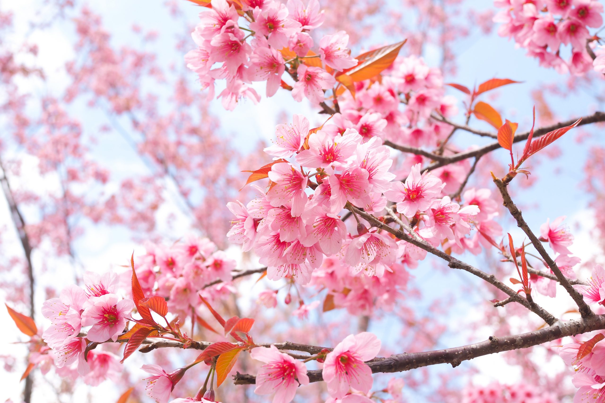
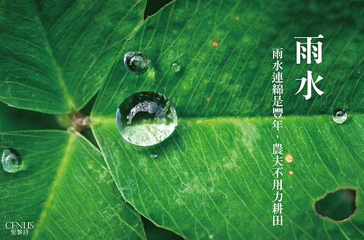
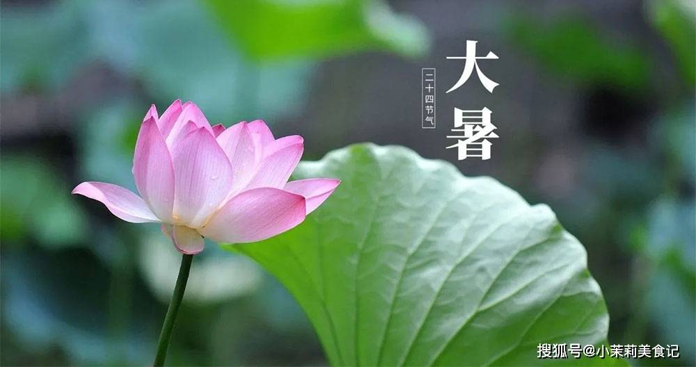
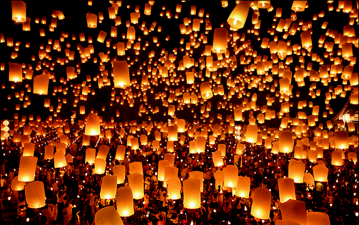
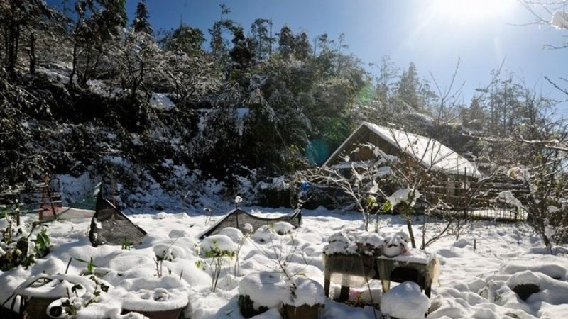
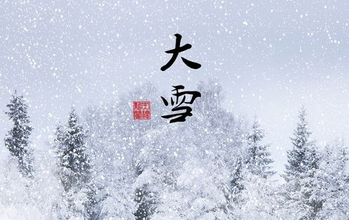

Khoảng thời gian này trong một năm là Tiết Lập Xuân . Tiết lập xuân có thể rơi vào ngày 4/2 hoặc 5/2 dương lịch hàng năm. “Lập” có nghĩa là xác lập, đánh dấu. “Xuân” có nghĩa là mùa xuân. Vì vậy, tiết Lập Xuân đánh dấu sự bắt đầu của mùa xuân, cũng như đánh dấu sự bắt đầu của một năm mới.
Theo quan niệm dân gian, đây chính là thời điểm đất trời hân hoan, bắt đầu những điều tươi mới và may mắn. Theo góc độ thiên văn học, thì tiết Lập Xuân đánh dấu một chu trình quỹ đạo mới của Trái đất khi quay quanh Mặt trời.
2. Tiết Lập xuân có đặc điểm gì?
Khi bắt đầu tiết Lập xuân, thời tiết sẽ không còn giá rét như tiết Đại hàn nữa mà chuyển sang ấm áp hơn. Bên cạnh đó, độ ẩm sẽ tăng cao, thường xuyên có mưa phùn và hình thành nên kiểu thời tiết nồm ẩm gây nên không ít khó chịu cũng như sự bất tiện cho đời sống sinh hoạt hằng ngày.
Ngoài ra, thời điểm Lập xuân cũng là lúc đánh dấu sự sinh trưởng trở lại của động, thực vật. Lúc này là thời điểm để cây cối đâm chồi, nảy lộc, các loài động vật ngủ đông sẽ trở lại tìm kiếm thức ăn và bắt đầu cho một chu kỳ sinh trưởng mới.
Tại Việt Nam, tiết Lập xuân cũng trùng với dịp Tết cổ truyền, chính vì thế, không khí nơi nơi sẽ rộn ràng, hân hoan, phấn chấn hơn.
3. Tiết Lập xuân có ý nghĩa gì?

Theo phong thủy, tiết Lập xuân rơi vào đúng tháng Giêng Âm lịch là lúc dương khí dồi dào, vận khí, tinh thần cũng như sức khỏe của con người có sự chuyển biến tích cực nhất. Do đó, vào tiết Lập xuân này người ta sẽ thường bắt đầu những công việc quan trọng như khai trương, xuất hành, bắt đầu buôn bán...
Tiết Lập xuân được xem là thời điểm rất "vượng" của những người mệnh Mộc. Theo đó, việc học hành, làm ăn, buôn bán của những người mệnh Mộc sẽ có nhiều tốt đẹp, thuận lợi, dễ thành công hơn. Ngược lại, những người kỵ hành Mộc (tức hành Thổ) thì cần chú ý nhiều hơn để tránh đi những điều xui xẻo, không may.
4. Nên và không nên làm gì vào tiết Lập xuân để được may mắn?
*Những việc nên làm vào tiết Lập xuân
Dưới đây là những việc mà bạn nên làm vào ngày Lập xuân năm 2023 để được may mắn, tốt lành cả năm:
Nên mặc quần áo màu sáng, hợp mệnh để được may mắn.
Giữ tinh thần vui vẻ, lạc quan, sảng khoái.
Nên dậy sớm để có thể hít thở không khí trong lành, ấm áp, đồng thời nên tập luyện thể thao nhằm nâng cao sức khỏe.
Trồng hoặc mua thêm cây xanh trong nhà để tăng thêm vận khí.
Nên làm nhiều việc tốt, việc thiện. Tuy nhiên, những việc làm này nên xuất phát từ tâm.
*Những việc không nên làm vào tiết Lập xuân
Không nên quét dọn sân vườn, nhà cửa vào ngày đầu tiên của tiết Lập xuân để không tiêu tán tài lộc, may mắn.
Kiêng cho nước, cho lửa vào ngày Lập xuân.
Kiêng cãi vã, đánh nhau hay nói những điều xui xẻo, không may.
Tránh mặc màu đen, màu trắng mà nên chọn những màu sắc tươi sáng...
1. Ngày hôm nay thuộc vào tiết nào của năm
Khoảng thời gian này trong một năm là Tiết Vũ Thủy
Tiết Vũ Thủy chính khoảng thời gian sau khi mùa đông kết thúc, những cơn mưa nhỏ li ti xuất hiện rồi sau đó không khí dần ấm lên và xuất hiện mưa nhiều hơn. Đó cũng chính là lý do vì sao tiết khí này được đặt tên là Vũ Thủy.

Còn theo chiết tự chữ Hán, Vũ Thủy nghĩa là mưa ẩm, mưa nhỏ kèm theo gió thổi nhẹ và yếu ớt. Vì vậy Vũ Thủy được xem như là thời điểm giao mùa giữa mùa đông và mùa xuân.
2. Đặc điểm của tiết Vũ Thủy
*Đặc điểm thời tiết, khí hậu
Thời tiết đặc trưng nhất trong tiết khí Vũ Thủy chính là những cơn mưa xuân nhỏ, hạt mưa li ti. Mưa xuân, mưa ẩm xuất hiện kèm theo đó là nhiệt độ ấm dần lên, ánh sáng chan hòa báo hiệu sự hồi sinh của vạn vật muôn loài.
*Hoạt động sinh giới
Tiết Vũ Thủy xuất hiện với những cơn mưa thì vạn vật cũng có sự thay đổi đáng kể. Mùa đông khiến đất đai khô cứng thì sang tiết Vũ Thủy đất đã ẩm, ấm áp và mềm hơn, thích hợp cho cây cối sinh trưởng, nảy mầm.
Những loài cây đã trưởng thành gặp tiết Vũ Thủy cũng sẽ phát triển mạnh mẽ không ngừng, tạo ra một màu xanh tươi mát vô tận. Vào thời điểm này thì một số loài cây cũng bắt đầu đơm hoa đẹp vô cùng. Đi kèm với sự phát triển của thực vật chính là lúc các loài động vật ăn thực vật có nguồn thức ăn dồi dào, sinh trưởng, phát triển sinh động hơn.
3. Ý nghĩa của tiết Vũ Thủy
*Tử vi
Tiết Vũ Thủy là tiết khí của mùa xuân, thuộc tháng Giêng (tháng Dần) theo lịch tiết khí. Mà theo học thuyết quái khí thì mùa xuân thuộc hành Mộc nên Mộc vượng. Mộc là cây nên được dùng làm biểu hiện cho tất cả sự vật sinh tồn.
Theo quan hệ ngũ hành thì Mộc thì khắc Thổ, Mộc sinh Hỏa nên Hỏa là con của Mộc, còn Kim khắc Mộc nhưng Mộc trong mùa xuân đang vượng nên Kim không khắc được Mộc. Cần lưu ý quan hệ ngũ hành này để hành sự trong tiết Vũ Thủy được thuận lợi.
*Quẻ dịch
Tiết Vũ Thủy ở giữa thời điểm tháng Giêng nên theo kinh Dịch đó chính là quẻ Thái. Đây là một quẻ cát lợi, với ý nghĩa mọi sự thuận lợi, may mắn, vui vẻ.
Theo tượng quẻ thì đây là thời điểm dương khí bao trùm, mọi vật trời đất trở lại vị trí vốn có của nó, mang đến những điều tốt đẹp, bình an, công việc thuận lợi, học tập đỗ đạt, gia đình hạnh phúc và mọi điều xấu xa bị đẩy lui. Đây cũng là lý do mà nhiều người chọn thời điểm này để bắt đầu mùa vụ, khởi công, khai trương, tổ chức đám cưới,....
*Phong thủy
Tiết Vũ Thủy là thời điểm thuộc hành Mộc nên người có ngũ hành Mộc thì sẽ gặp nhiều tài lộc, may mắn, vui vẻ. Với những người mệnh Hỏa được Mộc sinh nên cuộc sống cũng sẽ gặp nhiều thuận lợi, tài đức.
Riêng người mệnh Thổ bị Mộc khắc nên có thể sẽ gặp nhiều điều bất lợi về công việc, cuộc sống, sức khỏe vì vậy mà cần giữ cho mình sự bình tĩnh, tỉnh táo để không bị sa sút kéo dài.
4. Nên làm gì trong tiết Vũ Thủy?
*Tranh thủ chăm sóc, dưỡng da
Tiết Vũ Thủy là thời điểm có mưa xuân, độ ẩm trong không khí được cải thiện vì vậy mà da của chúng ta cũng được cấp ẩm đáng kể, giảm tình trạng nứt nẻ, khô ráp. Chính vì vậy mà vào thời điểm này bạn nên tranh thủ dưỡng da để duy trì được làn da ẩm mượt, căng mịn.
*Động phòng để sớm đón quý tử
Theo y học xa xưa thì muốn thụ thai thì cần phải chú ý âm dương cân bằng, thiên nhân cảm ứng, đôi bên hoà hợp. Tiết Vũ Thủy là thời điểm vạn vật sinh sôi nảy nở, chính vì vậy mà đây là thời điểm rất thích hợp để động phòng. Động phòng vào thời điểm này là lúc thiên thời địa lợi nhân hòa, dễ thụ thai hơn.
*Canh tác, bắt đầu mùa vụ mới
Tiết Vũ Thủy là lúc đất đai có độ ẩm cao, thêm sự màu mỡ, phì nhiêu, v
Xét theo âm dương ngũ hành, tiết Vũ Thủy miêu tả trạng thái biến động mạnh mẽ và thiên về dương khí nhiều hơn. Lúc này vạn vật bừng tỉnh và bắt đầu trỗi dậy, phát triển mạnh mẽ sau một kỳ nghỉ đông dài nên rất thuận lợi để bắt đầu mùa vụ.
1. Ngày hôm nay thuộc vào tiết nào của năm.
Khoảng thời gian này trong một năm là Tiết Kinh Trập
Tiết Kinh Trập thường bắt đầu từ ngày 5 (hoặc ngày 6) tháng 3 đến 20 (hoặc 21) tháng 3 dương lịch hàng năm.
Trước đó, vạn vật ngủ đông trong đất, các loài sâu bọ, côn trùng, không ăn không uống, xưng là “Trập”, tới thời điểm này sấm xuân khiến vạn vật bừng tỉnh, xưng là “Kinh”. Vì thế, Kinh Trập có nghĩa là sự tỉnh giấc của các loài công trùng sâu bọ sau một thời gian dài, chuyển tới mùa sinh sôi nảy nở của chúng. Vậy nên, người ta còn hay gọi tiết Kinh Trập là tiết sâu nở nữa.
*Tiết Kinh Trập diễn ra vào thời gian nào
Sau tiết thứ 2 là tiết Vũ Thủy, nhiệt độ, ánh sáng và tất cả điều kiện tự nhiên đều thay đổi, tạo điều kiện cho các loài thực vật đâm chồi nảy lộc, cây cối xanh tốt và ra hoa. Chính vì thực vật sinh sôi nên tạo điều kiện cho các loài côn trùng, sâu bọ thức dậy và phát triển sinh sôi. Khi những trận mưa xuống kèm theo tiếng sấm mùa xuân báo hiệu cho các loài thức dậy và hoạt động. Tính theo lịch dương thì khoảng thời gian này diễn ra từ ngày 5 (hoặc 6) tháng 3 đến ngày 20 (hoặc 21) tháng 3 hằng năm.
2. Đặc điểm của Tiết Kinh Trập.
Sấm xuân là điềm báo đáng chú ý nhất trong tiết Kinh Trập. Khoa học khí tượng hiện đại cho thấy vào tiết Kinh Trập, Trái đất trở nên ẩm ướt và không khí nóng gần bề mặt bốc lên. Trong khi đó, không khí nóng ẩm từ phía bắc hoạt động mạnh và tạo ra gió thường xuyên. Theo đó vì lý do này mà sấm sét thường xảy ra trong tiết Kinh Trập.
Thời điểm tiết Kinh Trập được coi là cực kỳ quan trọng đối với nhà nông và đây cũng chính là lúc được coi là thời điểm bắt đầu bận rộn nhất cho mùa vụ mới. Dịp này, mọi người hay mặc quần áo, phục sức màu đỏ, màu tím để khai vận, cầu may.
Ăn lê trong tiết Kinh Trập là một phong tục vẫn được người dân thực hành rộng rãi ở Trung Quốc ngày nay. Khi thời tiết trở nên ấm hơn và bầu không khí trở nên khô, mọi người có xu hướng cảm thấy miệng lưỡi bị khô, có thể gây cảm lạnh hoặc ho. Do trái lê có vị ngọt, mọng nước và có tính hàn làm ẩm phổi sẽ giảm ho.
3. Ý nghĩa của Tiết Kinh Trập
Nước ta đang trên đà hội nhập công nghiệp hóa và hiện đại hóa nhưng nền kinh tế chính vẫn là nông nghiệp. Cách trồng trọt và cấy lúa vẫn theo cách thủ công nên thời tiết và tiết khí là nhân tố rất quan trọng. Kể từ tiết Kinh Trập, người nông dân sẽ kết thúc những ngày nông nhàn và bắt đầu vụ xuân. Khi tiếng sấm cùng với cơn mưa xuân bắt đầu, khí hậu dần ấm áp, người dân đi vào vụ xuân cùng với đó là các loại côn trùng, sâu bệnh phát triển. Những lá cây mùa màng chính là nguồn thức ăn dồi dào của chúng, đồng ruộng cỏ dại cũng lần lượt nảy mầm nên nông gia bận rộn. Thời gian này cũng rất cần phòng bệnh cho gia súc, gia cầm.
Khi côn trùng trở lại không có ý nghĩa chỉ toàn là mặt hại. Một số loại cây trồng, đặc biệt là các loại cây ăn quả đang trong giai đoạn ra hoa và cần nhờ đến các loại côn trùng để quá trình thụ phấn diễn ra nhanh chóng hơn.
Cũng trong tiết này, truyền thống có tục tế Bạch Hổ và đánh tiểu nhân. Bạch Hổ chủ thị phi, võ mồm hại người, nên làm lễ tế dâng thịt lợn để Bạch Hổ không đi lung tung. Đánh tiểu nhân thực chất là tiêu diệt những loài côn trùng nhỏ gây hại, nhưng sau phát triển thành tục đánh đuổi kẻ xấu, cầu phúc cầu an để có một năm mỹ mãn như ý.
1. Ngày hôm nay thuộc vào tiết nào của năm.
Khoảng thời gian này trong một năm là Tiết Xuân Phân
Xuân phân - "xuân phân" chỉ mùa xuân trong bốn mùa xuân, hạ, thu, đông; "Phân chia" có nghĩa là giữa. Xuân phân được hiểu đơn giản là thời điểm giữa của mùa xuân.
Theo Dương lịch, tiết Xuân phân bắt đầu vào ngày 20 tháng 3 (hoặc 21 tháng 3) - ngay sau khi tiết Màn trập kết thúc. Kết thúc vào 3/4 (hoặc 4/4) và sau đó chuyển sang tiết Thanh minh. Lúc này, mặt trời gần xích đạo nhất.
2. Đặc điểm của Xuân Phân.
Trái đất nghiêng một góc 23,4 độ so với trục vuông góc của xích đạo, tạo ra một ngày đặc biệt, thời gian ngày và đêm bằng nhau. Trong một năm có 2 ngày như vậy, đó là ngày xuân phân và thu phân. Vào ngày Xuân phân, mặt trời mọc chính xác ở phía Đông và lặn chính xác ở phía Tây.
Lúc này, cái lạnh giá của mùa đông đã gần như biến mất hoàn toàn. Thời tiết ấm hơn, độ ẩm không khí cao, khả năng xuất hiện mưa rào. Điều này rất thuận lợi cho cây trồng, vật nuôi sinh trưởng và phát triển. Vì vậy, đây cũng là thời điểm lý tưởng để bắt đầu một vụ nuôi mới.
Tuy nhiên, mưa phùn ẩm ướt kéo dài gây cảm giác khó chịu. Có thể kể đến một số tình trạng phổ biến: Quần áo có mùi ẩm ướt, nền nhà trơn trượt, mưa nhẹ nhưng khó tạnh…
3. Ý nghĩa của ngày Xuân phân theo phong thủy.
Xuân phân tượng trưng cho sự cân bằng âm dương, cực kỳ tốt trong 24 tiết khí. Vì vậy, thời điểm này rất thích hợp để tiến hành các sự kiện trọng đại như đám cưới, đám hỏi.
Ngoài ra, theo quan niệm dân gian, vào ngày xuân phân, các loài động vật kết đôi, sinh sản. Những cặp vợ chồng sinh con vào khoảng thời gian này gặp nhiều may mắn, bình an. Đứa trẻ sinh ra cũng thông minh lanh lợi, có phúc khí, cuộc đời thuận lợi.
4. Làm gì vào ngày này.
*Quốc tế Hạnh phúc là trong Xuân phân
Nhiều nước trên thế giới có phong tục tổ chức lễ hội vào ngày xuân phân. Ngày Quốc tế Hạnh phúc cũng được chọn vào ngày 20/3 hàng năm.
Cơ đốc giáo tổ chức lễ Phục sinh vào ngày trăng tròn đầu tiên sau ngày xuân phân. Người Nhật cũng chọn dịp này để về sum họp gia đình. Ngoài ra còn có Tết Lào, Tết Thái Lan, Tết Miến Điện, Tết Nam Ấn ...
Tuy nhiên, ở Việt Nam không có nhiều hoạt động nổi bật trong dịp xuân phân. Người dân thường đi lễ chùa để cầu phúc, cầu tài hoặc dọn dẹp, tu sửa mồ mả tổ tiên ...
*Nuôi dưỡng trong Xuân phân
Tiết trời xuân phân ấm áp hơn, không cần mặc áo khoác khi đi ra ngoài. Nhưng đây là điểm chuyển tiếp giữa khí hậu lạnh và nóng. Người già và trẻ em cần đặc biệt chú ý đề phòng các bệnh về đường hô hấp, tai mũi họng.
Thời tiết mưa dầm dề khiến tâm trạng ai cũng bức bối, khó chịu. Tích cực tập thể dục thể thao, cân bằng dinh dưỡng để cơ thể khỏe mạnh.
1. Ngày hôm nay thuộc vào tiết nào của năm.
Khoảng thời gian này trong một năm là Tiết Thanh Minh
Ngày lễ Tết Thanh Minh không có ngày cố định thời gian bắt đầu từ ngày 4-5/4 (sau khi kết thúc tiết xuân phân) và kết thúc vào khoảng 20-21/4 dương lịch (khi bắt đầu Tiết Cốc Vũ). Vào ngày lễ này con cháu cùng nhau kéo về thăm mộ của tổ tiên, cùng nhau dọn dẹp quét rửa mộ phần và bày mâm cúng cho tổ tiên mong tổ tiên phù hộ cho con cháu luôn khỏe mạnh bình an.
2. Nguồn gốc, ý nghĩa của ngày Tết Thanh Minh
*Nguồn gốc của Tết Thanh Minh
Theo Nhà nghiên cứu văn hóa dân gian Nguyễn Hùng Vĩ cho biết, Tiết thanh minh là 1 trong 24 tiết khí. Tiết khí này được lập lịch theo quan niệm của các quốc gia phương Đông.
Về mặt nghĩa đen, thanh là khí trong, minh là sáng sửa. Tiết thanh minh nghĩa là khi trời mát mẻ quang đãng. Tiết thanh minh là tiết thứ 5 trong 24 tiết khí, bắt đầu sau ngày Lập Xuân 45 ngày và sau ngày Đông chí 105 ngày.
Ngoài Tết thanh minh, vào những ngày đầu năm tháng 3 còn có Hội Đạp Thanh hay còn gọi là hội giẫm cỏ. Đây là lễ hội cũng có nguồn gốc từ Trung Quốc trong dịp này, nam nữ sắm sửa cho mình quần áo đẹp để cùng đi chơi xuân. Hiện nay ở Việt Nam không còn lưu truyền lễ hội này nữa nhưng vẫn chúng ta vẫn có thể biết được lễ hội này qua đoạn thơ trong Truyện Kiều của Nguyễn Du:
*Ý nghĩa của Tết Thanh Minh
Đối với người Việt Nam, Tết Thanh Minh là dịp để con cháu hướng về cội nguồn tổ tiên. Dù đi xa làm ăn thì vào ngày này gia đình cùng tụ họp đi tảo mộ sau đó về nhà quây quần bên mâm cơm gia đình. Những ngôi mộ sạch sẽ tươm tất như thay con cháu thể hiện lòng thành kính của mình đối với tổ tiên.
Trong dịp Tết Thanh Minh các khu nghĩa trang thường trở nên đông đúc tấp nập thể hiện đạo lý “Uống nước nhớ nguồn” nét văn hóa đẹp của người dân Việt Nam. Dạy con cháu nên biết yêu thương hiếu thảo trân trọng ba mẹ ông bà khi còn sống chứ không phải chờ đến khi họ mất mới tỏ lòng thành kính của mình.
3. Người Việt thường làm gì trong Tết Thanh Minh
*Tết thanh minh đi tảo mộ
Đối với người Việt Nam ngày Tết Thanh Minh là ngày để con cháu tưởng nhớ hướng về tổ tiên nguồn cội mình. Vào ngày mùng 3/3 âm lịch con cháu sẽ chuẩn bị lễ vật và thắp hương trước mộ của người đã khuất, sau đó sẽ tiến hành dọn dẹp mộ phần mong tổ tiên phù hộ cho con cháu khỏe mạnh bình an. Sau khi tảo mộ các thành viên cùng nhau về nhà lập mâm cơm dâng lên bàn thờ gia tiên và cùng nhau ăn uống sum vầy, trò chuyện bên nhau gắn kết tình nghĩa huyết thống trong gia đình mình.
*Thanh minh cúng gì?
Trong ngày này ngoài việc tảo mộ thì tục cúng hay chuẩn bị mâm cúng cũng là một phần quan trọng được nhiều người coi trọng. Mọi người trong gia đình sẽ đi chợ mua đồ để chuẩn bị mâm cúng, tùy theo phong tục và địa phương mâm cúng chuẩn bị sẽ khác nhau, nhưng chủ yếu vẫn là một mâm cơm bình thường để mời cơm ông bà tổ tiên cùng nhau ăn uống sum vầy chứ không khoa trương hay mở yến tiệc linh đình.
1. Ngày hôm nay thuộc vào tiết nào của năm.
Khoảng thời gian này trong một năm là Tiết Cốc Vũ
Tiết Cốc Vũ nghĩa là gì? Trong 24 Tiết Khí, tiết Vũ Cốc là tiết khí thứ 6 trong năm thuộc tiết khí của mùa xuân. Đây là thời điểm Mặt Trời nằm ở vị trí kinh độ 30 độ là một điểm đặc biệt đánh dấu sự thay đổi của thời tiết, khí hậu.
Đặc trưng nổi bật được thể hiện ngay trong tên gọi của tiết khí Cốc Vũ. Ta có thể hiểu “Cốc” là hạt ngũ cốc, “Vũ” ở đây có nghĩa là mưa. Cốc Vũ là mưa như hạt ngũ cốc là mưa to mang lại thời tiết mát mẻ và rất tốt cho sự phát triển và sinh trưởng của cây cối, mùa màng.
2. Ý nghĩa của ngày tiết Cốc Vũ là gì?
Tiết Khí Vũ Cốc là tiết cuối cùng của mùa xuân đánh dấu thời điểm đất trời bắt đầu có sự thay đổi giao mùa từ mùa xuân sang mùa hè. Đây là lúc thời tiết không còn những cái giá lạnh mà sẽ cảm nhận được nắng ấm khi trời chớm hạ. Ngoài ra những trận mưa rào trong tiết Cốc Vũ như tạo nên một nguồn sống mới cho vạn vật, cây cối đặc biệt là mùa màng lúa, ngũ cốc và các loại hoa màu.
Vào Tiết Cốc Vũ con người sẽ cảm nhận được rệt trong sự thay đổi của đất trời là ngày dài đêm ngắn. Sự thay đổi diễn ra từ từ để con người kịp thích nghi với điều kiện và nhịp độ sống.
3. Tiết Cốc Vũ có vai trò như thế nào trong phong thủy?
Theo quỹ đạo và quy luật hàng năm tiết Cốc Vũ sẽ bắt đầu vào khoảng tháng 4 ngày 20 - 21/04 dương lịch tức vào khoảng tháng 3 âm lịch.
Theo phong thủy tiết Cốc Vũ là thời điểm bắt đầu chuyển tiếp giữa Mộc sang Hỏa (từ mùa xuân sang mùa hạ). Bởi vậy Cốc Vũ sẽ tốt cho những người hợp Hỏa như Mộc, và kỵ với những người khắc Hỏa. Như vậy Tiết Cốc Vũ là tháng 3 chính là tháng Thìn. Tháng Thìn mang khí của Thủy khi gặp Cốc Vũ thường có phần yếu ớt.
Những người sinh vào tháng 3 thuộc Thổ thường sẽ chịu ảnh hưởng và tác động mạnh mẽ đến tính cách, số mệnh của con người.
4. Tiết Cốc Vũ bắt đầu từ ngày nào?
Tiết Khí hay tiết Cốc Vũ được tính dựa trên quỹ đạo quay của Trái Đất quay xung quanh Mặt Trời. Đây được gọi là cách tính hệ thống âm dương lịch trong thời cổ đại Trung Hoa. Theo cách tính đó có thể xác định Tiết Cốc Vũ được bắt đầu từ ngày 20 - 21/04 dương lịch và thời điểm kết thúc và vào ngày mùng 5/5 dương lịch hàng năm. Tùy vào từng năm tiết Cốc Vũ có thể bắt đầu vào ngày 20/04 hoặc ngày 21/04, vào năm 2023 Tân Sửu Cốc Vũ bắt đầu từ ngày 20/04 đến ngày 5/5/2023 dương lịch
5. Những việc nên làm trong tiết Cốc Vũ là gì?
Đặc điểm thời tiết khí hậu trong tiết Cốc Vũ thường là những cơn mưa rào kết hợp với sấm, chớp. Quan trọng là trong những cơn mưa này thường chứa hàm lượng axit nitoric khi rơi xuống đất tạo ra phản ứng hóa học rất tốt cho sự sinh trưởng và phát triển của cây cối. Đặc biệt đây là lúc vào chính vụ của vụ chiêm tạo điều kiện cho một mùa màng bội thu.
Trong nông nghiệp thời tiết và điều kiện này sẽ kích thích được cây ăn quả được nhanh chín vì vậy đây là thời điểm tốt để thu hoạch các loại cây trồng ngắn ngày.
Ngoài ra tiết Cốc Vũ cũng được coi là mua sinh sản mạnh của hệ động vật nhất là các loài lưỡng cư và chim chóc. Đặc biệt đây là thời điểm tốt nhất để thu hoạch mật ong ngon và chất lượng nhất.
1. Ngày hôm nay thuộc vào tiết nào của năm.
Khoảng thời gian này trong một năm là Tiết Lập Hạ
Ngày Lập hạ và tiết Lập hạ là hai định nghĩa khác nhau. Ngày Lập hạ chính là ngày đầu tiên của tiết Lập hạ. Tiết Lập hạ nằm trong 24 tiết khí và là thời điểm mùa hè bắt đầu. Lúc ấy thời tiết sẽ thay đổi như ngày dài hơn đêm, nóng bức hơn.
Ngoài ra chi tiết hơn về tiết Lập hạ thì Lập hạ được cắt nghĩa như sau: Lập là đánh dấu, bắt đầu, hạ là mùa hè. Vì vậy là tiết Lập hạ thường diễn ra khoảng đầu tháng 5 Dương lịch, cũng là tầm thời gian đầu của mùa hè.
*Ý nghĩa tiết Lập hạ
Tiết Lập Hạ là thời khắc đầu nguồn trong quá trình tiến hóa, vận động và biến đổi của vũ trụ, thế giới sống, nhân sinh và quan điểm ngũ hành của năng lượng, khí, âm, dương.
Khí dương phát triển hơn ở khí Lập Hạ, còn khí âm thì yếu hơn. Dương tượng trưng cho tài lộc, sự phát triển,… Thật vậy, trong mùa hè, các loài động vật trở nên năng động hơn, sinh sôi nảy nở, nhiệt độ và mức độ ánh sáng cũng rất cao.
2. Nên và không nên làm gì trong ngày Lập hạ?
Vào ngày Lập hạ bạn nên:
Uống nhiều nước để tránh mất nước do nắng nóng.
Phòng ngừa bệnh cho cây và vật nuôi.
Vệ sinh nhà cửa thường xuyên.
Không nên:
Đi từ điều hòa ra trời nắng ngay để tránh sốc nhiệt.
1. Ngày hôm nay thuộc vào tiết nào của năm.
Khoảng thời gian này trong một năm là Tiết Tiểu Mãn
Theo dân gian, tiết Tiểu mãn (小满; Xiao- man; Grain Buds) kéo dài từ ngày 20 hoặc 21 tháng 5 đến mùng 5 tháng 6 và đứng ở vị trí thứ tám trong 24 tiết khí của cung Hoàng đạo. Tiết Tiểu mãn được phổ biến ở các nước phương Đông bắt đầu từ năm 104 trước Công nguyên nhằm phản ánh sự thay đổi của các mùa trong năm. Đây cũng là thời điểm Mặt trời tạo với đường xích đạo một góc 60 độ.
Vào thời kỳ trước và sau tiết Tiểu mãn, lượng mưa thường rất lớn gây ra những trận lũ lụt. Lũ Tiểu mãn thường không lớn nhưng là nguồn cung cấp nước quan trọng cho sinh hoạt và sản xuất, bổ sung cho nước cho các hồ chứa trước khi bước vào mùa khô hạn thiếu nước.
Khi vào tiết Tiểu mãn, dân gian thường có phong tục cúng lễ để cây cối phát triển thuận lợi, cầu mong nguồn cá tôm dồi dào. Ngoài ra, vào dịp này, mọi người thường ăn các món có tác dụng làm mát, dưỡng sinh như ngó sen, đậu phụ, rau diếp đắng, thưởng trà.
Dưới đây là một số điều được dân gian truyền lại như một lời khuyên hữu ích đã được người xưa tổng kết để tương ứng với các tiết khí trong năm.
Tiết Tiểu mãn (grain buds) nghĩa là lúc hạt thóc vào đòng ngậm sữa. Đây cũng là thời điểm mà dân gian thường tổ chức các nghi lễ văn hóa, làm vườn và thực hành lối sống lành mạnh lúc giao mùa. Ảnh: IC
Thời điểm tốt để ăn cá. Tiết Tiểu mãn đánh dấu vụ thu hoạch mùa hè sắp bắt đầu và đón những trận mưa lớn cá tôm nhanh lớn và sinh sôi cho ngư dân nguồn lợi lớn. Ảnh: IC
Thời điểm tốt để ăn trái dâu tằm, bắt nguồn từ câu ngạn ngữ của nông dân Trung Quốc: "Trái dâu từ đỏ chuyển sang chín thẫm mọng nước"- đây là loại trái cây cực kỳ bổ dưỡng mà mọi người ít biết. Ảnh: IC
Lúc nên ăn các loại thảo mộc như rau của cây kế. Đây là một trong những loại rau thơm ăn được sớm nhất ở Trung Quốc có vị hơi đắng, mặn và chua nhưng ngọt hậu có chức năng làm mát máu và giải độc cơ thể. Nó có thể được chế biến và ăn kèm với nhiều loại món ăn khác nhau…Ảnh: IC
Lúc mọi người nên chú ý đến sức khỏe do nhiệt độ và độ ẩm đều tăng cao trong giai đoạn này có thể làm phát ban hoặc nổi mẩn ngứa, thấp khớp, eczema và nhiều loại bệnh ngoài da khác. Lời khuyên chính là tập luyện để giữ sức khỏe như chạy bộ và tập thái cực quyền. Ảnh: IC
Thời kỳ quan trọng để chăm sóc cây trồng, hoa trái do đây cũng là mùa dễ phát sinh nhiều loại sâu bệnh và cỏ dại gây hại ở mức cao nhất nên cần đặc biệt chú ý theo dõi, chăm tưới, cắt tỉa. Ảnh: IC
1. Ngày hôm nay thuộc vào tiết nào của năm.
Khoảng thời gian này trong một năm là Tiết Mang Chủng
Tiết Mang Chủng là tiết khí thứ 9 trong 24 tiết khí, là dấu hiệu của mùa tiểu mạch lớn, là tiết thu hoạch của nông vụ, cũng là thời điểm gieo trồng cho mùa thu hoạch sau.
2. Tiết Mang Chủng rơi vào thời điểm nào?
Tiết Mang Chủng bắt đầu từ bắt đầu từ ngày 5 hoặc ngày 6 tháng 6 và kết thúc vào ngày 21 hay 22 tháng 6. Thời điểm khi Mặt Trời ở xích kinh 75° (kinh độ Mặt Trời bằng 75°).
Mang Chủng hay còn được gọi là tiết “Ngũ cốc trổ bông”, đối với nông vụ có ý nghĩa đặc biệt quan trọng.
3. Tiết Mang Chủng có đặc điểm gì?
Đây là thời điểm các loại ngũ cốc lớn đủ và chờ thu hoạch. Ở Việt Nam, do đặc điểm khí hậu đa dạng, trong tiết Mang Chủng, có nơi bắt đầu mùa gặt nhưng có nơi đã bắt đầu gieo trồng vụ mới, mạ xanh nhạt, nhất nhất sinh cơ.
Bà con nông dân nên tranh thủ thời tiết mưa nhiều, nhiệt ẩm cao trong thời gian này để gieo cấy, nếu chậm thì nhiệt độ không đủ, thời kì sinh trưởng của lúa bị ngắn lại nên dễ gặp sâu bệnh, khô hạn, sản lượng không cao. Khoai lang cũng nên gieo trồng ngay trong tiết Mang Chủng.
Vậy nên mới có câu “Tiết Mang Chủng mau mau trồng trọt”.
Cũng vì thế mà trong tiết khí này có nghi lễ gieo mạ. Để khẩn cầu mùa màng bội thu, nhà nhà cùng nhau làm lễ cúng tế, dâng lên ngũ cốc, gia súc và rau màu để thôn dân bình an, có một vụ mùa thắng lợi.
Ở một số địa phương vùng cao của Việt Nam như Sơn La, Yên Bái,… tiết Mang Chủng còn là mùa hái quả, thời điểm mận chín cây và được thu hoạch. Các địa phương ở phía Bắc lại tổ chức lễ hái vải. Loại quả này chỉ rộ lên trong thời điểm tiết Mang Chủng, sang Hạ Chí là bắt đầu vãn dần.
4. Ý nghĩa tiết Mang chủng theo ngũ hành, phong thủy?
Theo ngũ hành, tiết Mang Chủng có Hỏa khí cực vượng, ảnh hưởng lớn tới sự vận hành, biến động của vũ trụ và vận mệnh con người. Bên cạnh đó, tháng 5 âm lịch ứng với quẻ Thiên Phong Cấu, sinh âm khí nhưng vẫn rất cát.
Do đó mọi luận giải theo các quan điểm khoa học dự đoán phương Đông cần phải dựa trên những đặc điểm này để có kết luận chính xác.
5. Thực phẩm tốt cho sức khỏe trong tiết Mang Chủng
Để ngăn ngừa phòng tránh bệnh tật, bạn có thể tham khảo một số thực phẩm tốt cho sức khỏe trong tiết khí Mang Chủng được gợi ý dưới đây:
*Ăn những thực phẩm nhẹ
Trong tiết khí này, không nên ăn những thức ăn có dầu mỡ hoặc hương vị mạnh. Theo đó, lựa chọn hàng đầu của bạn trong tiết khí này là nên ăn rau xanh và ngũ cốc thô, có tác dụng hạ huyết áp và mỡ máu và ít dùng thịt cừu, thịt lợn, ớt, hành và gừng nếu thường xuyên cảm thấy khát và mệt mỏi.
*Ăn nhiều trái cây và rau xanh
Thời tiết nóng nực của tiết Mang chủng nên rau và trái cây là hai loại thực phẩm có tính chất hàn được khuyến khích sử dụng. Theo đó, quả mướp đắng là một lựa chọn kinh điển vì nó chứa rất nhiều dưỡng chất thiên nhiên và có đặc tính tốt những người bị huyết áp cao hoặc mỡ máu.
Ngoài ra, cà chua, dưa chuột, cà tím, cần tây, măng tây, dưa hấu và dâu tây cũng được khuyên dùng để hạ nhiệt trong cơ thể và thúc đẩy tiêu hóa.
*Ăn mận xanh luộc
Do loại quả mận khi còn xanh thường rất chua nhưng lại chứa nhiều axit hữu cơ tự nhiên và rất giàu khoáng chất nên có thể giúp làm sạch máu, giảm mỡ trong máu. Vì vậy nếu muốn loại bỏ mệt mỏi và có thân hình cân đối thì trước khi ăn phải luộc lên.
1. Ngày hôm nay thuộc vào tiết nào của năm.
Khoảng thời gian này trong một năm là Tiết Hạ Chí
Tiết hạ chí là một trong 24 tiết khí theo nông lịch của Trung Quốc. So với ngày hạ chí thì tiết hạ chí có thời gian kéo dài lâu hơn. Thường bắt đầu từ 21/6 hoặc 22/6 đến 7/7 hoặc 8/7 dương lịch. Năm 2021 không có sự thay đổi nhiều về vòng quay và quỹ đạo quay của Trái Đất nên tiết hạ chí 2021 cũng diễn ra trong khoảng thời gian này.
2. Đặc điểm tiết hạ chí
*Đặc điểm thời tiết
Như đã nói ở phần trên vào thời điểm diễn ra tiết hạ chí, toàn bộ Bắc bán cầu sẽ nghiêng về phía Mặt Trời. Nên thời tiết trong thời điểm này rất nóng và oi bức. Lượng nước bốc hơi vào hạ chí cũng lớn nên dễ gây cảm giác khô, mất nước cho mọi người.
Thời điểm này gió Tín phong và gió Mậu Dịch phát triển mạnh nên lượng hơi nước được đưa vào đất liền lớn. Hơi nước này ngưng tụ và gây nên mùa mưa kéo dài. Mưa lũ với lượng lớn kéo dài có thể gây nên hiện tượng lũ lụt, ngập úng hoặc bão lớn. Gây nên nhiều tổn thất cho đời sống con người.
Đặc biệt với sự biến đổi không ngừng của thời tiết và ảnh hưởng của ô nhiễm môi trường. Thì vào thời điểm hạ chí, các hiện tượng thời tiết tiêu cực rất dễ xảy ra. Vì thế, con người cần có sự chuẩn bị kỹ càng vào thời gian này.
*Đặc điểm ngày và đêm
Vào tiết hạ chí hay tiết mang chủng khi Bắc bán cầu nghiêng hẳn về phía Mặt Trời nên lượng ánh sáng ở đây nhận được sẽ rất nhiều. Dẫn đến việc thời gian ban ngày trong tiết khí này sẽ lớn nhất trong năm. Thậm chí thời gian ban ngày này có thể dài đến mức một số thành phố ở Bắc Âu còn có hiện tượng “đêm trắng”. Tức là không hề xuất hiện ban đêm.
*Đặc điểm sinh vật và thực vật
Thời tiết hạ chí nóng ẩm và mưa nhiều nên vào thời điểm này, sinh vật và thực vật sinh trưởng mạnh mẽ. Thực vật thì tích cực quang hợp, bổ sung và tích lũy chất dinh dưỡng chuẩn bị cho mùa khô sắp tới. Còn các loài động vật cũng tăng cường tìm kiếm và tích lũy nguồn thức ăn để chuẩn bị cho mùa thu, đông. Đây cũng là thời điểm mà chúng tiến hành ghép đôi và sinh sản. Vì nguồn dinh dưỡng để nuôi con trong thời điểm này rất dồi dào.
Bên cạnh đó, thời tiết nóng ẩm, thay đổi thất thường cũng tạo điều kiện thuận lợi để các loài vật, các loại vi khuẩn, vi sinh vật gây hại phát triển. Nhất là các vi sinh vật gây bệnh về đường tiêu hóa, hay muỗi gây nên bệnh sốt xuất huyết,…
*Tiết hạ chí với con người
Đối với nông dân vào tiết hạ chí, họ thường khá bận rộn với việc đồng áng. Các hoạt động chăm sóc, làm cỏ cho cây trồng cũng được diễn ra trong thời điểm này. Để đảm bảo cây trồng phát triển mạnh và cho năng suất tốt nhất.
Ngoài ra, như đã nói ở phần trên, các loài vật, vi sinh vật, vi khuẩn gây hại trong thời điểm này khá nhiều. Nên con người cũng cần lưu ý đặc biệt đến sức khỏe của mình. Cần có cách sinh hoạt và làm việc hợp lý để tránh các trường hợp cảm nắng, sốt xuất huyết, sốt virus,…
3. Ý nghĩa ngày hạ chí.
Theo các quan niệm xưa, ngày hạ chí diễn ra vào tháng 5 âm lịch diễn ra vào sau tiết xuân phân và trước tiết thu phân. Nó có thể đem đến những mặt lợi và hại cho cuộc sống con người. Với những ai sinh vào thời điểm hạ chí thì thường có nhiều tính cách tốt. Như nhiệt tình, nhanh nhẹn, linh hoạt. Tuy nhiên tính tình của họ thường khá nóng nảy và rất khó kiềm chế được cảm xúc của mình.
Trong ngày này, các ngành nghề xây dựng thường không được phát triển. Vì thời tiết nắng nóng, thay đổi bất thường, lại hay có mưa. Gây nên những ảnh hưởng tiêu cực đến việc thi công và chất lượng công trình. Vì thế người ta thường không chọn xây nhà trong thời điểm này mà thường chờ đến mùa khô mới tiến hành xây dựng, sửa chữa.
1. Ngày hôm nay thuộc vào tiết nào của năm.
Khoảng thời gian này trong một năm là Tiết Tiểu Thử
Tiết Tiểu Thử là tiết khí thứ 11 trong 24 tiết khí của một năm. Ngày Tiểu Thử, mặt trời nằm ở vị trí tọa độ xích kinh 105 độ
Dựa theo tiếng Hán – Việt thì “Tiểu” nghĩa là nhỏ bé, còn “Thử” thì nghĩa là nắng nóng. Có thể hiểu “Tiểu thử” nghĩa là nắng nóng nhẹ, báo hiệu cho việc chuẩn bị xảy ra đợt nắng nóng lớn là “Đại Thử” . Tại sao đã qua Hạ Chí rồi mà thời tiết vẫn còn nắng nóng tới như vậy? Nguyên nhân là do hiện tượng đối lưu trong không khí từ đó mà tạo nên áp thấp nhiệt đới, thậm chí là có mưa bão diễn ra về sau.
2. Đặc điểm của Tiết Tiểu Thử
*Thời tiết
Hiện tượng áp thấp nhiệt đới làm cho không khí oi bức, độ ẩm trong không khí lớn, làm cho con người cảm thấy ngột ngạt và khó chịu.
Hoạt động của gió mùa Tây Nam mang theo hơi nước, độ ẩm cao. Khi gặp địa hình chắn gió như đồi núi chúng sẽ được ngưng tụ lại tạo nên tình trạng mưa lớn và nhiều ở các sườn núi phía Tây.
So với sườn Tây thì sườn phía Đông gió lại mang tính chất khô hanh, độ ẩm thấp hơn. Vì 2 sườn có tính chất gió khác nhau nên làm ảnh hưởng rất nhiều đến khí hậu. Từ Tiết Tiểu Thử trở đi, khu vực của Việt Nam, Trung Quốc thường chịu ảnh hưởng mạnh mẽ và thời tiết sẽ rất oi bức kèm theo các hiện tượng mưa bão, lũ lụt.
*Hoạt động sinh giới
Do vẫn có hiện tượng ngày dài hơn đêm, cộng thêm có độ ẩm cao và cường độ ánh sáng mạnh nên vào tiết Tiểu Thử thực vật quang hợp mạnh mẽ, phát triển nhanh. Với những cây hoa màu vừa gieo trồng thì nay đã cứng cáp, khỏe mạnh, nhưng lại phải cạnh tranh với nhiều loại cỏ dại cũng phát triển vào mùa này.
Đây cũng là thời điểm mà các loài động vật phát triển và sinh sản rất mạnh nhờ nguồn thức ăn dồi dào và nhiệt độ ấm áp.
3. Tiết Tiểu Thử 2022 diễn ra vào thời gian nào?
Tiết khí đứng ngay trước Tiểu Thử là Hạ Chí và tiết khí kế tiếp sau là Đại Thử. Ngày bắt đầu tiết tiểu thử do vậy được tính theo cách tính của dương lịch hiện đại và nó thông thường rơi vào ngày 7 hay 8 tháng 7 dương lịch tùy theo từng năm.
Tiết Tiểu Thử 2022 sẽ bắt đầu từ thứ 5, ngày 7 tháng 7 theo dương lịch, tức ngày 9 tháng 6 âm lịch. Và sẽ kết thúc vào ngày 22 tháng 7 dương lịch.
Tích cực đánh bắt thủy hải sản, nhưng cần chú ý thông tin về thời tiết.
Tập luyện thể dục thể thao nâng cao sức khỏe, chống chọi với thời tiết khắc nghiệt của khí hậu.
Nâng cao phòng bị với các trận bão lũ có thể ập tới bất cứ khi nào. Đặc biệt các trận mưa lớn có thể gây ra sạt lở nên cần hết sức lưu ý.
1. Ngày hôm nay thuộc vào tiết nào của năm.
Khoảng thời gian này trong một năm là Tiết Đại Thử

Đại Thử là tiết khí thứ 12 trong 24 tiết khí trong năm, đánh dấu thời kỳ tiết trời trở nên oi nóng vô cùng. Ngày bắt đầu tiết Đại Thử, Mặt Trời ở vào kinh độ 120 độ, sau khi chuyển động về vòng cực Bắc thì Mặt Trời lúc này sẽ có xu hướng chuyển dần về Xích đạo và phía Nam.
Theo chiết tự, "đại" nghĩa là to lớn, với mức độ nghiêm trọng hơn; "thử" là trời nắng, nóng nực và vô cùng oi bức. Hiểu một cách đầy đủ, "Đại Thử" có nghĩa là tình trạng thời tiết nắng nóng, oi bức đỉnh điểm, đó là sự tiếp nối của thời kỳ tiết khí trước.
Sau tiết Tiểu Thử, đất trời sẽ bước vào tiết Đại Thử, đây mới chính là thời điểm cam go, cảm nhận được rõ ràng nhất thời tiết mùa hè
Đây cũng là tiết khí cuối cùng trong mùa hè. Đó là do lúc này mặt trời di chuyển dần về phía xích đạo mang theo một lượng nhiệt rất lớn dẫn đến hiện tượng nhiệt độ cao nhất trong năm, kèm theo đó là hiện tượng áp thấp, bão, lũ.
2. Tiết Đại Thử diễn ra vào lúc nào?
Theo lịch tiết khí, tiết Đại Thử được tính bắt đầu từ ngày 22-23/7 và kết thúc vào ngày 7/8 dương lịch hàng năm.
Trong thời gian diễn ra tiết khí này, nền nhiệt độ tăng cao gây ra tình trạng nóng bức, không khí trở nên ngột ngại và vô cùng khó chịu. Tại một số nơi nhiệt độ có thể đạt ngưỡng từ 28 - 40 độ C.
Một số khu vực như Ấn Độ nhiệt độ có thể gây ảnh hưởng trực tiếp tới sức khỏe của con người. Nắng nóng, oi bức rồi sau đó lại gây ra tình trạng mưa lớn gây lũ lụt, bão xảy ra trên diện rộng.
Theo Lịch Vạn Niên, trong năm Tân Sửu này, tiết Đại Thử 2021 bắt đầu từ ngày 23/7/2021, kết thúc vào ngày 7/8/2021.
3. Đặc điểm thời tiết và hoạt động sinh giới trong tiết Đại Thử
*Đặc điểm thời tiết, khí hậu:
Tiết Đại Thử là một trong 5 tiết khí biểu thị cho nhiệt độ thay đổi gồm Tiểu Thử, Đại Thử, Xử Thử, Tiểu Hàn, Đại Hàn.
Đây cũng là thời điểm nóng nhất của mùa hè. Nhiệt độ và độ ẩm tăng cao chính là những đặc trưng của tiết khí này.
Tiết khí này nằm trong “Tam phục”, thời điểm có nhiều ánh sáng mặt trời nhất, nhiệt độ cao nhất (trên 35 độ). Thời gian diễn ra tiết khí nà là lúc xuất hiện nhiều trận mưa lớn.
Dân gian có câu: “Tiểu Thử mưa như ngân, Đại Thử mưa như kim”. Nếu trong tiết Đại Thử mà mưa dầm thì năm đó mưa nhiều. Mưa đi kèm với sấm chớp, khá nguy hiểm.
Sở dĩ nhiệt độ trong tiết Đại Thử đạt mức cao nhất trong năm là bởi nhờ được nhận một lượng năng lượng bức xạ lớn, thời gian tương đối dài nên Trái đất hấp thu một lượng năng lượng nhiệt độ không nhỏ ở nửa cầu Bắc.
Lượng nhiệt độ này được tích lũy, không phát tán, tiêu hao nên bề mặt nửa cầu Bắc vốn đã nóng nay lại vẫn tiếp tục nhận được lượng nhiệt độ tương đương nên không khí càng nóng bức, ngột ngạt hơn.
Trong thời điểm tiết Đại Thử mang không khí nắng nóng oi bức này, mặc dù các khối không khí đại dương hoạt động mạnh, mang theo một lượng lớn hơi nước thổi vào lục địa, nhưng tình hình nhiệt độ không mấy được cải thiện mà vẫn cao như vậy.
Tại một số nơi nhiệt độ đạt ngưỡng cao nhất trong năm có thể lên tới 37 độ C – 40 độ C. Một số khu vực như Ấn Độ nhiệt độ cao ảnh hưởng nghiêm trọng tới sức khỏe và sinh hoạt của nhiều người.
Trong quãng thời gian của tiết Đại thử xuất hiện ngày càng nhiều những hiện tượng đối lưu trong bầu khí quyển, tạo nên những cơn áp thấp nhiệt đới, oi bức, ngột ngạt, khó chịu vô cùng, rồi sau đó kéo theo những cơn bão đổ bộ vào đất liền, gây nên tình trạng mưa kéo dài, lũ lụt xảy ra trên diện rộng.
*Hoạt động sinh giới:
Tại thời điểm diễn ra tiết Đại thử, các loài thực vật vẫn phát triển mạnh, nhiều loài có các hoạt động sinh sản, tạo ra quả, hạt để duy trì nòi giống, hoặc chuẩn bị bước vào giao đoạn tiềm ẩn trong thời kỳ về sau.
Nhiều loài thực vật có biểu hiện tích lũy nước, chất dung dưỡng để chuẩn bị bước vào thời kỳ lạnh, khô hạn về sau. Điều này trở thành một chu kỳ sinh học kéo dài từ năm này sang năm khác, để tạo nên sự thích nghi với quá trình thay đổi môi trường tự nhiên
Đối với các loài động vật, khi tiết Đại Thử đến thì chúng tranh thủ kiếm nguồn thức ăn khi vẫn còn dồi dào, nhiều loài thực hiện công việc sinh sản, duy trì bảo tồn nòi giống.
Đến những thời điểm về sau hoạt động này dường như ngừng hẳn để dành chất dinh dưỡng cho việc tích lũy năng lượng trong mùa đông ở dạng các mô mỡ.
Khi tiết Đại Thử đến thì cũng là lúc mà cuộc sống con người trong giai đoạn này gặp ảnh hưởng lớn, nhiều công việc mùa màng và các hoạt động khác bận rộn vô cùng, thường phải đối mặt với thiên tai, bão lũ, nên trong thời điểm này tại những khu vực thường xảy ra thiên tai nghiêm trọng thì công tác chuẩn bị được tiến hành kỹ lưỡng.
Các hoạt động sinh hoạt, sản xuất luôn được gắn với quá trình dự đoán thời tiết để tránh xảy ra những tai nạn, thiệt hại, thương vong đáng tiếc có thể xảy ra.
4. Ý nghĩa tiết khí Đại Thử theo ngũ hành, phong thủy
Tiết Đại thử nằm trong thời gian tháng 6 âm lịch, đây là tháng mang nhiều ngũ hành Hỏa tăng cường và thịnh vượng.
Đây là khoảng thời gian vượng khí với những người có dụng thần là Thổ có nhu cầu nạp thêm năng lượng Hỏa để cân bằng ngũ hành trong tứ trụ.
Những người này cơ thể khỏe mạnh dẫn đến tư duy sáng suốt, làm việc hiệu quả, sáng tạo, tinh thần thoải mái, vui vẻ sẽ nhận được nhiều tài lộc và vượng khí giúp tài vận hanh thông, sự nghiệp thuận lợi trong những ngày tiết Đại Thử.
Tuy nhiên với những người kỵ thần là Thổ (hoặc dụng thần Thủy) thì họ thường cảm giác uể oải, mệt mỏi dẫn đến tư duy không sáng suốt, đầu óc thiếu tập trung, tâm lý ức chế, khó chịu, hành động vội vã, hấp tấp, thiếu sự kiên nhẫn, hiệu quả công việc không cao, có thể hao tốn tiền bạc, hoặc gặp nhiều khó khăn trong cuộc sống.
Tiết Đại Thử rơi vào tháng 6 âm (tháng Mùi) cũng là một trong 4 tháng tứ quý (3, 6, 9, 12) theo lịch tiết khí.
Vì là tháng Thổ vượng, mà Thổ vượng thì khắc Thủy, Thủy bị Thổ khắc cho nên Thủy bị suy đến mức Vô Khí (Tử), còn Thổ sinh Kim nên Kim Tướng, Hỏa sinh Thổ nên Hỏa Hư, còn Mộc khắc Thổ nên Mộc Tù.
Vì vậy quẻ “Khảm” Thủy suy bại vào tứ quý.
5. Ảnh hưởng của tiết Đại Thử đối với sức khỏe con người
*Giữ gìn sức khỏe, đề phòng tai nạn:
Khi vào tiết Đại Thử thì vào thời điểm nhiệt độ cao, oi bức, độ ẩm lớn, cần phải giữ gìn sức khỏe vì bệnh tật rất dễ phát sinh, nhiều người có thể bị cảm, bị bệnh do các loại vi khuẩn phát sinh và nhân lúc đề kháng yếu ớt, xâm nhập cơ thể.
Đây cũng là thời điểm mưa gió thất thường, thiên tai rất nhiều nguy cơ xảy ra nên cần đề phòng tai nạn.
*Lưu ý các bệnh về máu, huyết áp:
Tiết Đại thử là quãng thời gian oi bức cao điểm, nên vì thế cần chú ý các bệnh về máu, huyết áp, tim mạch, tuần hoàn, tai biến, đột quỵ, nóng trong, mụn nhọt, nhiệt miệng, mụn nhọt...
Vì thế cần phải điều chỉnh dinh dưỡng, nên sử dụng nhiều loại thực phẩm tính mát, tính hàn để giúp cân bằng, chế hóa, điều tiết cho cơ thể ổn định, thích nghi được với sự khắc nghiệt của thời tiết.
*Đề phòng âm khí vượng:
Trong quẻ Dịch tháng 6 âm lịch ứng với quẻ Độn, quẻ này là quẻ hung, tương của âm khí phát sinh, ngày càng trưởng thành, âm khí tượng trưng cho bệnh tật, u ám, buồn đau, bất hạnh, dương khí tượng trưng cho niềm vui, thành công, may mắn.
Khi dương khí tiêu biến dần thì sự may mắn giảm đi, ẩn trong đó là các tai họa tiềm ẩn do thiên tai, bệnh tật gây ra. Vì thế cần lưu ý đề phòng.
*Chú ý kiểm soát cảm xúc:
Trong thời tiết oi bức, khó chịu, sức khỏe suy giảm, tâm lý không ổn định thì quyết định của con người thường mắc phải sai lầm, mối quan hệ với những người xung quanh dễ phát sinh mâu thuẫn, nhiều người không kiềm chế được cảm xúc, có thể nổi nóng, cáu giận, tổn thương người xung quanh, mất đi hòa khí và tình cảm vốn có.
6. Thực phẩm tốt cho sức khỏe trong tiết khí Đại Thử
*Nên ăn cháo, uống nhiều nước:
Trong tiết Đại Thử, tốt nhất là nên ăn cháo nhẹ, vừa dễ ăn lại tốt cho hệ tiêu hóa. Nấu cháo cùng các loại thực vật mùa hè có tác dụng bồi bổ cơ thể, thanh nhiệt giải độc.
Uống nhiều nước để giảm bớt khí khô nóng trong người, cung cấp đủ nước cho cơ thể do bị bốc hơi.
Ngoài nước lọc, có thể uống nước đỗ xanh, nước trà xanh, trà hoa cúc, đều có nhiều khoáng chất và dinh dưỡng, bổ sung chất điện giải, tránh mất nước.
Người bị nóng trong, phát nhiệt, uể oải, chán ăn trong tiết Đại Thử nên dùng nhiều đậu xanh, mướp đắng, bí xanh – những loại thực vật dưỡng gan bổ khí, tốt cho dạ dày, có lợi với bồi dưỡng cơ thể và cải thiện nguyên khí.
*Ăn quả vải:
Nghiên cứu khoa học đã chứng minh, quả vải có chứa glucoza và nhiều vitamin. Ăn vải tươi trong ngày hè nắng nóng của tiết Đại Thử có tác dụng tẩm bổ cơ thể rất hiệu quả.
*Ăn dứa (thơm):
Vào tiết Đại thử, người Đài Loan thường có tập tục ăn dứa, bởi họ cho rằng dứa vào thời điểm này là ngon nhất.
Hơn nữa, từ dứa trong tiếng Mân Nam còn đồng âm với từ "vượng lai" (thịnh vượng tới). Do đó, loại quả này còn được cho là tượng trưng của bình an, cát tường, làm ăn phát đạt.
Ngoài ra, tiết Đại thử gần với ngày 15/6 âm lịch. Người Đài Loan thường gọi đây là "tiết bán niên", bởi đây là ngày chính giữa của năm.
Vào ngày này, sau khi làm lễ cúng bái gia tiên, cả gia đình sẽ cùng nhau ăn "bánh niên viên", một loại bánh làm từ bột gạo nếp và đường, đường nặn, mang ý nghĩa đoàn viên, hạnh phúc.
1. Ngày hôm nay thuộc vào tiết nào của năm.
Khoảng thời gian này trong một năm là Tiết Lập Thu
24 tiết khí trong mỗi năm được xác định bằng thời điểm mặt trời đi qua những kinh độ nhất định. Bắt đầu từ kinh độ 0⁰ đến kinh độ 345⁰, cứ mỗi 15⁰ là thời điểm diễn ra một tiết khí.
Lập Thu – “Lập” trong xác lập, “Thu” trong mùa thu, Lập Thu là một từ Hán Việt có nghĩa là bắt đầu mùa thu.
Ngày Lập Thu chính xác là ngày mặt trời đi qua kinh độ số 135° và thường rơi vào các ngày từ 7-9 tháng 8 Dương lịch.
*Ý nghĩa tiết Lập Thu
Tiết Lập Thu là thời điểm mà mùa hạ qua đi, nhường chỗ cho mùa thu tới. Nó đánh dấu sự kết thúc của cái nắng gay gắt và những cơn mưa rào tầm tã. Thay vào đó, khí trời dần dần chuyển sang se lạnh, hanh khô, bầu trời dường như cũng thêm phần ảm đạm.
Đồng thời, tiết Lập Thu thường rơi vào tháng 7 m lịch. Dân gian truyền rằng đây là tháng cô hồn, những điềm xấu sẽ thường xuyên xảy ra hơn.
2. Tiết Lập Thu có đặc điểm gì?
Mùa thu là khoảng thời gian chuyển giao giữa mùa hè và mùa đông. Do đó, bắt đầu từ thời điểm này, thời tiết trở nên dễ chịu hơn rất nhiều. Nhiệt độ vẫn khá cao, nhưng không còn cảm giác nóng rát. Ngày nắng vàng, chiều tối và đêm mát mẻ, có chút se lạnh nhưng không quá lạnh.
Vào mùa thu, những cơn mưa rào giảm dần, thời tiết hanh khô, không khí mất độ ẩm. Điều này có thể khiến da bị kích ứng, bong tróc, nứt nẻ, thiếu sức sống.
Mùa thu cũng có nhiều cơn bão, với cường độ mạnh. Tuy nhiên, đây là thời điểm cây trồng được mùa và chuẩn bị thu hoạch. Vì vậy, nông dân thường phải gặt sớm để tránh bão.
Ngoài ra, cứ vào tiết Lập thu, người ta thường nhắc đến gió heo may, hoa cúc và hương cốm non. Cùng với đó là mùa cây thay lá, mùi hoa sữa nồng nàn khắp các con phố ...
3. Ý nghĩa tiết Lập Thu theo phong thủy.
Theo lịch âm, tiết Lập thu rơi vào tháng 7 - còn gọi là tháng ma. Theo quan niệm dân gian, vào tháng cô hồn, cửa thần được mở để linh hồn về thăm gia đình. Những vong linh không được thờ cúng cũng nhân cơ hội này đi du ngoạn khắp nơi. Chúng gây ra những điềm xấu và cản trở bản mệnh trên con đường công danh, sự nghiệp.
Hơn nữa, bàn về việc kinh doanh và khí, khí này ứng với quẻ Bi. Đây là một quẻ xấu, tượng trưng cho sự lạnh lùng, vạn vật trên đời chìm trong bóng tối.
Mọi người thường lo lắng và cho rằng khoảng thời gian này là nguyên nhân của mọi điều xui xẻo, kém may mắn. Nhưng thực tế không phải vậy, chỉ cần biết cách hóa giải, tiết chế, tích đức, tránh làm việc xấu thì chắc chắn mệnh chủ sẽ bình an vô sự.
Đặc biệt, tiết Lập Thu rất hợp với những người mệnh Kim. Đường tài lộc, sự nghiệp, tình duyên, gia đạo của họ đều vô cùng thuận lợi, rộng mở. Ngược lại, người mệnh Kim nên cẩn thận, tránh va chạm với đồng nghiệp.
4. Làm gì ở Lập Thu
*Tục cúng rằm tháng bảy “xá tội vong nhân”.
Người dân Việt Nam và một số nước phương Đông vẫn giữ phong tục cúng Rằm tháng Bảy. Tùy theo điều kiện gia đình mà họ chuẩn bị lễ vật để bày tỏ lòng thành kính, biết ơn đối với tổ tiên. Đồng thời cầu may mắn, bình an, hạnh phúc và lập công để “xá tội vong nhân”.
Người xưa có câu: "Có thờ, có thánh, có kiêng có lành". Vì vậy, tiết Lập Thu, người ta thường tránh làm những việc trọng đại như cưới xin, làm nhà, làm ăn lớn. Tích cực làm việc thiện, đi lễ chùa để cầu bình an, nhưng tuyệt đối không sa vào mê tín dị đoan.
*Dưỡng sinh vào tiết Lập Thu
Thời tiết vào thu có sự thay đổi rõ rệt khiến con người dễ mắc bệnh. Đặc biệt người già và trẻ nhỏ cần chú ý đề phòng cảm cúm theo mùa, sức khỏe yếu. Cần bổ sung nước, chất dinh dưỡng đầy đủ và giữ ấm cho cơ thể.
Bạn nên giữ tâm lý thoải mái, tiết chế bản thân và đừng để tình cảm lấn át lý trí. Nếu không, theo thời gian sẽ sinh ra tâm lý u uất, buồn phiền, khó chịu trong người.
Đối với người nông dân, vào mùa thu hoạch, công việc khá vất vả và bận rộn. Họ phải cập nhật tình hình thời tiết thường xuyên để có biện pháp ứng phó với những cơn bão bất ngờ.
1. Ngày hôm nay thuộc vào tiết nào của năm.
Khoảng thời gian này trong một năm là Tiết Xử Thử
Xử Thử là tiết khí thứ 14 trong 24 tiết khí trong năm theo lịch Gregory và là tiết khí thứ 2 của mùa hè. Đây là thời điểm mà Mặt Trời nằm ở kinh tuyến 150º.
Theo chiết tự tiếng Hán, “Xử” nghĩa là quyết đoán, dứt điểm, triệt tiêu, kết dứt (chẳng hạn xử lý, xử đoán, xử quyết...); “Thử” nghĩa là nắng nóng, tiết trời oi bức (trong thời điểm mùa hạ có những tiết khí như Tiểu thử, Đại thử - chỉ về tình trạng thời tiết này).
Xử Thử hiểu một cách đầy đủ, chính xác nghĩa là tình trạng nắng nóng đã kết dứt. Không còn kiểu thời tiết oi bức, nhiệt độ giảm đáng kể, tiết trời trở nên mát mẻ.
Nếu tiết Lập Thu là tiết khí bắt đầu mua thu, vẫn còn sót lại chút nắng nóng của mùa hạ thì Xử Thử là tiết khí đánh dấu thu sang hoàn toàn, nhiệt độ giảm rõ rệt, cảm giác mát mẻ tràn lan, nắng nóng đã đi qua.
2. Tiết Xử Thử bắt đầu từ ngày nào?
Theo Lịch vạn niên, tiết khí Xử Thử được bắt đầu từ ngày 23-24/8 và kết thúc vào ngày 7-8/9 dương lịch.
Vào thời điểm ngày đầu tiên của tiết khí này, Mặt Trời ở vị trí xích kinh 150 độ, di chuyển dần đến vị trí chòm sao Sư tử (một trong 12 cung Chiêm tinh Hoàng đạo của phương Tây). Vào ban đêm có thể quan sát thấy chòm sao Bắc đẩu quay cán gáo về phương vị Tây Nam.
Tiết khí này là một bước ngoặt trong việc giảm nhiệt độ. Nó là biểu tượng của khí hậu mát mẻ hơn và cuối mùa hè.
Trong nửa tháng diễn ra Xử Thử, có 2 ngày lễ quan trọng là Thất Tịch và Vu Lan, lễ này trùng với tết Trung nguyên.
Xử Thử hết nóng, tranh Thu đoạt nóng, thời tiết hanh khô, cây cỏ khô vàng, hơn nữa lại nhiều thiên tai, cho nên là mùa phải cẩn thận.
3. Đặc điểm khí hậu của tiết Xử Thử
*Đặc trưng thời tiết, khí hậu:
Bước vào Xử Thử, nhiệt độ đã có sự thay đổi rõ rệt, giảm dần theo từng ngày, nắng nóng không còn bức bách nữa.
Đây là tiết khí bắt đầu tiết âm của thiên địa trời đất, Mặt Trời dời về Nam nên nhiệt lượng yếu dần đi, trên nhân gian âm thịnh dương suy. Trong tiết khí này, không khí mát lạnh, khô ráo, có chút hanh, là lúc nắng nhẹ gió thanh.
Đó là lý do Xử Thử được coi là tiết khí đẹp nhất trong năm, rất thích hợp tổ chức lễ hội, du lịch.
Trong tiết khí này, khi cái nóng nực, oi bức hoàn toàn bị triệt tiêu thì nhiệt độ ôn hòa, khí trời mát dịu, độ ẩm không khí cao, thời tiết rất dễ chịu, lượng bốc hơi nước giảm, lượng mưa không cao, ít mưa, khối không khí lục địa hoạt động mạnh hơn nên buổi sáng sớm và đêm tiết trời se se lạnh.
Thời điểm diễn ra Xử Thử, nắng vàng như mật ong, không khí dễ chịu, bầu trời cao, xanh, lại thường thấy những bông hoa bồ công anh bay lơ lửng trong gió. Bốn bề rực rỡ một màu vàng như tranh vẽ, thật là một phong cảnh hữu tình, nên thơ, đẹp đẽ.
*Hoạt động sinh giới:
Trong Xử Thử, thời gian ngày và đêm không còn chênh lệch lớn mà tương đối cân bằng. Trước những thay đổi này thì nhiều loài sinh vật sẽ có những phản ứng thích nghi với môi trường.
Thời điểm này cũng sẽ diễn ra quá trình chuyển biến để hạn chế sự thoát hơi nước diễn ra mạnh mẽ, vì nhiệt độ, ánh sáng giảm, cùng với độ ẩm, lượng mưa không cao nên quá trình quang hợp của cây bị ức chế mạnh mẽ.
Nhiều loài cây thay lá, chuyển từ sắc xanh sang sắc vàng, đỏ, bắt đầu rụng lá (những giai đoạn sau còn trơ lại những cành cây khẳng khiu), nhiều loài xương rồng lá biến đổi thành gai để hạn chế sự thoát hơi nước. Một số loài thực vật khác tích lũy chất dinh dưỡng ở dạng củ, thân, rễ.
Và cũng trong tiết khí Xử Thử thì các cây lương thực, ngũ cốc đều đã chín hết, có thể thu hoạch toàn bộ. Những loài cây khác có quả chín, hoặc phát tán bào từ, hạt giống ra khu vực xung quanh chờ mùa xuân sẽ tạo ra cây mới.
Tại thời tiết của Xử Thử, có nhiều loài động vật tích cực tích mỡ, dự trữ thức ăn, chuẩn bị căn cứ trú đông, chống chịu với giá lạnh sương tuyết sắp tới. Các loài chim di cư có nhiều hoạt động bay về phương Nam tránh rét cho kịp thời.
Trong thế giới của các loài gia súc như trâu bò, các loài hươu nai ngoài tự nhiên bước vào một cuộc chiến ác liệt để giành giật bạn tình, thực hiện việc giao phối, sinh sản. Đây mới chính thức là mùa giao phối, sinh sản của những loài động vật này.
Giới côn trùng, sâu bọ dường như ngưng mọi hoạt động, chúng đẻ trứng ở những cành cây, kẽ lá, khe ngách khác nhau rồi kết thúc vòng đời. Lượng trứng côn trùng này chờ đến tiết Kinh trập sang năm sẽ nở và bắt đầu một cuộc sống mới.
4. Ý nghĩa của tiết khí Xử Thử trong phong thủy, ngũ hành
*Quẻ dịch:
Thời gian diễn ra Xử Thử chính là thời điểm tháng 7 âm lịch (tháng Thân) ứng với quẻ Bĩ trong kinh Dịch, cũng là tiết khí của mùa thu.
Mà mùa thu có Kim vượng, Kim tượng trưng cho nguồn lợi ích vô biên của tạo hóa; mùa Thu cũng là bắt đầu có Bát quái và Quẻ Càn.
Càn là Kim mà Kim tức là vàng bạc kim khí. Bởi cớ đấy đức hành Kim là Lợi, vì đó mà con người muốn kìm hãm vào lòng ích kỷ dục lợi cầu danh thì phải biến trong chữ Nghĩa.
Kim vượng thì khắc Mộc, cho nên Mộc bị suy đến mức Vô Khí (Tử), còn Kim sinh Thủy nên Thủy Tướng, Thổ sinh Kim nên Thổ Hư, còn Hỏa khắc Kim nên Hỏa Tù. Vì vậy quẻ “Chấn”, quẻ “Tốn” Mộc suy bại vào mùa thu.
*Tử vi
Xử Thử thuộc giữa tháng 7 âm lịch. Tháng 7 âm lịch là tháng Thân thuộc tính dương, hành Kim.
Là một tháng thuộc dương Kim lại có nhiệt độ xuống thấp, gió heo may thổi nên nhiều người có thể mắc các bệnh về hô hấp. Nên giữ ấm cơ thể, hạn chế đồ lạnh như kem, đá, nên dùng một chút đồ ăn cay nóng, tắm nước ấm để giữ gìn sức khỏe.
Đặc biệt, Xử Thử có âm khí lan tràn, được coi là thời kỳ đen tối, bế tắc, u buồn, trì trệ. Hơn nữa, trong quan niệm dân gian tháng này địa phủ mở cửa, xá tội cho các vong hồn nên âm khí rất thịnh.
Sự tích mưa Ngâu, một câu chuyện tình chia ly, buồn tủi, thấm đẫm nước mắt cũng vào thời điểm tháng này nên vì thế trong tháng này người ta không mấy khi tổ chức các việc cưới gả, động thổ khởi công (vì lo điều xấu sẽ xảy ra).
Tất nhiên việc kết hôn không chỉ phụ thuộc vào quan niệm dân gian, mà cốt lõi là tình cảm và trách nhiệm của hai bên. Nhưng người xưa quan niệm “có thờ có thiêng, có kiêng có lành”, có nhiều những vấn đề đi sâu vào tiềm thức, nên sức mạnh về tinh thần của nó rất lớn.
5. Phong tục trong tiết Xử Thử
*Du lịch đón mùa thu:
Các phong tục dân gian trước và sau Xử thử hầu hết đều có liên quan đến tục thờ cúng tổ tiên và đón mùa thu.
Trước và sau khi nắng nóng, sẽ có các nhiều các hoạt động dân gian diễn ra sôi nổi. Đặc biệt là sau cái nóng của mùa hè thì đây cũng là thời điểm thích hợp để mọi người tổ chức các chuyên du lịch để thưởng ngoạn cảnh sắc mùa thu nơi thôn quê.
*Thả đèn lồng sông:
Đèn lồng sông còn được gọi là “đèn lồng hoa sen”. Với phong tục này, người dân thường thả đèn lồng hoặc đèn cầy trôi trên sông nhằm thanh lọc những hồn ma chết đuối và những hồn ma hoang dã cô đơn khác trong nước.
*Lễ hội cầu ngư:
Đối với ngư dân miền biển thì tiết khí Xử Thử là thời điểm thu hoạch thủy sản sau nắng nóng, vì lúc này nhiệt độ nước biển còn cao, cá vẫn bám biển, tôm cua cá.
Vì vậy, kể từ thời điểm này, mọi người có thể thường xuyên thưởng thức nhiều loại hải sản tươi ngon.
*Lễ Thất Tịch:
Đêm Thất Tịch là ngày 7 tháng 7 âm lịch, hay còn gọi là “tiết con gái”, “tiết khất xảo” trong văn hóa truyền thống Trung Hoa, người hiện đại dùng tên gọi khác là “lễ tình nhân Trung Quốc”. Ngày này cũng là ngày gắn liền với sự tích Ngưu Lang - Chức Nữ.
Ngày lễ Thất Tịch tại Việt Nam còn được gọi là ngày “ông Ngâu bà Ngâu” - cách gọi Ngưu Lang và Chức Nữ trong văn hóa người Việt Nam. Trong ngày này, trời thường mưa rả rích trong suốt một ngày, gọi là mưa ngâu. Tương truyền đó cũng chính là nước mắt của Ngưu Lang và Chức Nữ khi được gặp nhau.
Điều đặc biệt với ngày lễ Thất Tịch tại Việt Nam đó là vào thời vua vua Lý Thánh Tông (1054 - 1072), theo những ghi chép lịch sử để lại, lúc này nhà vua ở độ tuổi 42 nhưng vẫn chưa có con để truyền ngôi vị, nên đã vào một ngôi chùa để cầu tự vào ngày 7 tháng 7 Âm lịch và nhờ đó sinh ra Thái tử Càn Đức.
Vì vậy, vào ngày này hàng năm, một lễ hội đã được tổ chức ở chùa Hà và trở thành lễ hội cầu tình duyên, gia đình hạnh phúc, con đàn cháu đống.
Trong ngày lễ, các đôi lứa yêu nhau thường đến chùa, làm lễ và cầu mong cho tình duyên son sắt. Nếu trời không mưa, các đôi thường cùng nhau ngắm sao Ngưu Lang - Chức Nữ và thề hẹn. Người ta tin rằng hai người yêu nhau nếu cùng ngắm sao Ngưu Lang - Chức Nữ trong đêm mùng 7 tháng 7 thì sẽ mãi mãi bên nhau.
*Lễ Vu lan:
Thời gian diễn ra Xử Thử còn có ngày rằm tháng 7, cũng là lễ Vu lan. Đây là dịp để báo hiếu với mẹ cha, tìm về với nguồn cội, tưởng nhớ về những người đã khuất.
Vào ngày này, các gia đình thường chuẩn bị một mâm cỗ cúng để báo ơn cha mẹ 7 kiếp. Tại các chùa Việt Nam, vào ngày lễ Vu lan thường có nghi thức “Bông hồng cài áo”, là cài bông hồng cho những ai còn mẹ và bông trắng cho những ai mất mẹ, nhắc nhở về lòng hiếu thảo và tình người.
Lễ này còn trùng với ngày “Xá tội vong nhân” của phong tục Á Đông. Theo Đạo giáo, ngày này gọi là “Quan Âm phủ xá tội”, bởi vào sinh nhật tức Rằm tháng 7, quan Âm phủ phải từ bi xá tội.
Theo phong tục dân gian, mọi người thỉnh cầu quan Âm phủ xá tội cho vong nhân trong ngày này, sau này lại trở thành phổ độ cho các vong linh cô hồn dã quỷ.
Tại Việt Nam, việc cúng Rằm tháng 7 bao giờ cũng phải cúng ở chùa (thờ Phật) trước, rồi mới đến cúng tại gia. Lễ này thường được làm vào ban ngày, tránh làm vào ban đêm, khi Mặt trời đã lặn.

1. Ngày hôm nay thuộc vào tiết nào của năm.
Khoảng thời gian này trong một năm là Tiết Bạch Lộ
Bạch Lộ là tiết khí thứ 15 trong 24 tiết khí trong năm theo lịch tiết khí của một số quốc gia như Trung Quốc, Việt Nam, Nhật Bản, Triều Tiên.
Theo nhiều tài liệu ghi chép rằng, tiết Bạch Lộ nghĩa là nắng nhạt. Tuy nhiên, khi tra cứu nguyên gốc theo chiết tự chữ Hán thì “bạch” nghĩa là sắc trắng, “lộ” nghĩa là sương mù, những hạt móc, hơi nước mong manh tạo thành. Vì thế nên tiết Bạch Lộ phải hiểu là thời điểm bắt đầu xuất hiện sương mù, những hạt mưa móc ban đêm và buổi sáng sớm mới chính xác.
Đây cũng là thời điểm độ chênh lệch nhiệt độ ngày đêm lớn nhất trong năm, mọi người có thể cảm nhận rõ ràng sự biến hóa của thời tiết. Đây cũng là hiện tượng báo hiệu đã sắp đến đêm rằm Trung thu trăng sáng.
2. Tiết Bạch Lộ diễn ra vào thời gian nào?
Ngày đầu tiên diễn ra tiết khí này được gọi là ngày Bạch Lộ. Trong ngày này, Mặt trời ở vị trí xích kinh 165 độ. Trong thực tế, vị trí của Mặt trời khi này đã dần tiến về phía Xích đạo, cách khu vực bán cầu Bắc một khoảng khá khá.
Lúc này cả hai nửa cầu Bắc và Nam đều nhận được lượng nhiệt độ và ánh sáng tương đương nhau, nên thời tiết ở cả hai nửa cầu đều không quá nóng, hay quá lạnh.
3. Đặc điểm của tiết Bạch Lộ
*Thời tiết
Tiết Bạch Lộ thường xuất hiện sương mù, hơi nước vào ban đêm và sáng sớm do thời điểm này sự chênh lệch nhiệt độ ngày đêm rất rõ ràng (được coi là lớn nhất trong năm). Buổi sáng và ban đêm nhiệt độ giảm nhanh khiến hơi nước ngưng tụ thành sương đọng lại.
Nguyên nhân là do hoạt động quay quanh mặt trời của trái đất dẫn đến sự thay đổi vị trí. Nửa cầu Bắc trong thời điểm tiết Bạch Lộ không còn ngả nhiều về phía mặt trời nên lượng nhiệt và bức xạ ánh sáng giảm, thời gian chiếu sáng cũng giảm.
Trong khi, hoạt động mạnh dần của các khối khí lục địa từ cao áp Xibia mang theo những cơn gió lạnh và khô. Bề mặt trái đất tại khu vực nửa cầu Bắc trải qua một mùa hạ mưa nhiều được tích một lượng độ ẩm cao, nay độ ẩm môi trường giảm, cùng các đợt gió khô nên tình trạng bốc hơi nước từ các loài thực vật, bề mặt đất, bề mặt sông suối tăng cao (để cân bằng độ ẩm với khối không khí khô).
Chính nhiều nguyên nhân đó cũng khiến xuất hiện sương mù bao phủ, hơi nước, hạt móc ngưng tụ vào ban đêm hoặc buổi sáng sớm.
*Sinh vật
Thời gian tiết Bạch Lộ diễn ra có nhiều loài thực vật tìm cách giảm lượng thoát hơi nước bằng cách trút những lớp lá vàng, để lại những cành cây khẳng khiu, xù xì, sần sùi. Đây là hiện tượng chúng ta có thể thấy rất rõ ràng vào mùa thu.
Cũng trong thời điểm này nhiều ao hồ, giếng nước cũng bắt đầu cạn nước, ở một số vùng núi cao bắt đầu xuất hiện tình trạng thiếu nước. Chính những thay đổi này tác động không nhỏ tới các loài động vật.
Để tìm kiếm nguồn nước và thức ăn (khi nguồn nước giảm, cây cối trụi lá) nhiều loài di cư xuống khu vực cận xích đạo và phía Nam để tìm kiếm nguồn nước và nguồn thức ăn mới. Một số loài động vật trú đông trong các hang sâu, bùn đất, ống cây, hốc đá...
3. Nên làm gì vào tiết Bạch Lộ
Do thời tiết nên khi đến tiết Bạch Lộ có thể gây ảnh hưởng xấu đến sức khỏe con người.
Quần áo cần được phơi trời nắng, trước bức xạ Mặt trời thì có thể tiêu diệt vi khuẩn, giải phóng các chất bột giặt còn dư và làm cho quần áo có mùi thơm hơn. Khi phơi sương ban đêm trong thời gian tiết Bạch Lộ thì khi sử dụng có thể bị kích ứng da, vì những hợp chất trong bột giặt không được phân giải hết.
Đặc biệt, trong tiết Bạch Lộ cần giữ gìn sức khỏe, tránh đi đêm, dễ nhiễm sương lạnh mà mắc bệnh, nên mặc ấm, hạn chế tắm nước lạnh, sử dụng thực phẩm giàu chất béo và vitamin để tăng cường kháng bệnh, chịu lạnh.
Có thể tham khảo một số thực phẩm tốt cho hô hấp như mật ong, ô mai, gừng, ớt cũng nên trở thành sự lựa chọn của nhiều người trong tiết này.
Khoảng thời gian này trong một năm là Tiết Thu phân
Tiết Thu phân - “thu” chỉ mùa thu trong 4 mùa xuân, hạ, thu, đông; “phân” nghĩa là sự chia cắt, điểm ở giữa. Tiết Thu phân được hiểu đơn giản là thời điểm chính giữa của mùa thu.
Tiết Thu phân bắt đầu vào ngày 23/9 (hoặc 24/9) theo dương lịch. khi tiết Bạch lộ đã kết thúc. Kéo dài đến ngày 7/10 (hoặc 8/10) và chuyển sang tiết Hàn lộ. Lúc này, mặt trời ở vị trí 180 độ và gần xích đạo nhất.
2. Đặc điểm của Thu phân.
*Cây cối thay lá là đặc trưng của tiết thu.
Tương tự như điểm xuân phân, vào điểm thu phân, thời gian ngày chính xác bằng thời gian ban đêm. Đặc biệt, mặt trời cũng mọc ở hướng Đông và lặn ở hướng Tây.
Điều này được giải thích là do trục của trái đất nghiêng một góc 23,4 độ so với trục vuông góc với mặt phẳng quỹ đạo. Kết hợp với khoảng thời gian trái đất quay trên trục của nó và quay quanh mặt trời.
Tiết thu là khoảng thời gian đặc trưng của mùa thu được thể hiện rõ nét nhất. Trời nắng nhưng không quá nóng nên khá thoải mái. Chiều tối và đêm nhiệt độ giảm mạnh, có thể có sương.
Lúc này cây bắt đầu bước vào giai đoạn rụng lá. Tán cây chuyển sang màu đỏ vàng và khô héo dần. Toàn bộ mặt đất được bao phủ bởi một thảm lá vàng tuyệt đẹp.
Các loài động vật cũng tranh thủ thời điểm trung thu, khi thời tiết còn ấm áp để kiếm thức ăn dự trữ. Lượng thức ăn đó sẽ giúp chúng tồn tại trong hang qua mùa đông dài. Một số loài khác chọn cách di cư về phía nam để tránh rét.
3. Ý nghĩa của ngày thu phân theo phong thủy.
*Ý nghĩa phong thủy của tiết thu và thu phân trong 24 tiết khí là gì?
Bắt đầu từ tiết thu, động thực vật chuẩn bị bước vào trạng thái “ngủ đông”. Do đó, các nhân tố sinh sôi càng yếu đi, khí lạnh nhiều, âm thịnh.
Những người tương hợp với Kim trong tiết Thu phân có thể đạt được những bước tiến dài. Công việc họ làm cũng dễ thành công, tinh thần ổn định và dần gặt hái thành quả.
Ngược lại, những người mệnh Kim thì nên cẩn thận hơn một chút. Tuy không nghiêm trọng nhưng dễ ảnh hưởng xấu đến của cải và sức khỏe.
Bên cạnh đó, thu phân thuộc tháng Dậu theo âm lịch. Những người sinh vào thời kỳ này lạnh lùng, cứng rắn và mạnh mẽ. Họ sống nội tâm hơn và không thích chia sẻ nhiều về cuộc sống riêng tư của mình.
Nhìn chung, thời điểm thu phân vẫn là thời điểm thuận lợi, thích hợp để làm nhiều việc lớn. Nhân duyên hanh thông, cuộc đời sung túc, gặp nhiều may mắn.
4. Làm gì trong tiết thu phân.
*Phong tục của mùa thu phân
Đón tết trung thu là một hoạt động vô cùng ý nghĩa trong ngày trung thu
Khí hậu của mùa thu phân dễ chịu, mát mẻ nên có rất nhiều lễ hội được tổ chức trên khắp thế giới. Chưa kể đến ngày lễ sum họp của người Nhật, lễ hội thu hoạch của các nước Âu Mỹ ...
Ở Việt Nam và các nước Châu Á, người dân đón Tết Trung thu (rằm tháng 8 âm lịch). Các thành viên trong gia đình quây quần ngắm trăng và phá cỗ. Mọi người thưởng thức bánh nướng và bánh ngọt, trẻ em mang theo đèn lồng và xem múa lân. Đây là một nét đẹp trong phong tục dân gian vẫn được lưu giữ và lưu truyền cho đến ngày nay.
Theo nông lịch, thu phân là thời điểm thu hoạch lúa vụ mùa. Nếu trước đây, bà con thường nghỉ ngơi, bỏ hoang ruộng đến vụ đông thì nay, kỹ thuật canh tác đã phát triển, người dân có thể trồng thêm các loại cây vụ đông và rau màu.
*Nuôi dưỡng mùa thu phân
Thời tiết vào thu phân chuyển dần từ khí hậu nóng sang khí hậu lạnh. Vì vậy, mỗi người hãy tự quan tâm đến sức khỏe của mình. Đặc biệt người già và trẻ em cần giữ ấm cơ thể, tuyệt đối không được chủ quan.
Mọi người nên mặc quần áo ấm, áo dài tay, bổ sung dinh dưỡng và tập thể dục. Tránh tắm khuya, tắm nước lạnh để không bị cảm lạnh, nhiễm lạnh.
Tóm lược, Thu phân có nhiều đặc điểm riêng cần được quan tâm và nghiên cứu. Hi vọng qua bài viết này các bạn đã giải đáp được thắc mắc của mình về mùa thu phân. Cũng như điều chỉnh cuộc sống sao cho phù hợp vì lợi ích của bản thân và những người xung quanh.
1. Ngày hôm nay thuộc vào tiết nào của năm.
Khoảng thời gian này trong một năm là Tiết Hàn Lộ
Thời điểm có tiết Hàn Lộ thường rơi vào khoảng ngày 8 hoặc ngày 9 tháng 10 dương lịch, lúc mặt trời ở xích kinh 195 độ (hay kinh độ mặt trời là 195 độ) theo lịch Gregory. Thời tiết lúc này lạnh giá, có sương nhiều và kết trắng cả mặt đất, hàn khí thịnh vượng.
2. Đặc điểm của tiết Hàn Lộ.
Nhiệt độ của tiết trời Hàn Lộ thấp hơn cả tiết Bạch Lộ. Bạch Lộ có tiết khí chuyển từ nóng sang mát mẻ thì Hàn Lộ lại chuyển từ mát sang lạnh. “Hàn lộ hàn lộ, khắp nơi lạnh lộ” cũng là vì lẽ đó. Theo lịch Vạn Sự ghi thì khi vào tiết Hàn Lộ, mùa mưa sẽ kết thúc, khí trời ngày ấm đêm lạnh, bầu trời trong. Đây là cảnh tượng cuối thu vô cùng lãng mạn.
Lúc này, khi trời dần chuyển lạnh, cũng là thời điểm cây cối hoa cỏ úa tàn. Người xưa gọi đây là “từ thanh” (giã biệt cây cỏ). Từ sau tiết Thu phân tới tiết Hàn Lộ, mặt trời dịch ngày càng gần về phía Nam. Quỹ đạo mà trái đất quay quanh mặt trời đã chuyển sang giai đoạn bán cầu Nam ngả phía mặt trời nhiều hơn.
Đó là lý do bán cầu Bắc lúc này nhận được lượng ánh sáng ít hơn, nhiệt độ thấp hơn bán cầu Nam. Nhìn chung thiên nhiên vào thời gian này khá tiêu điều, hoang sơ, hệ sinh thái nghèo nàn, không giàu màu sắc và thiếu sự nhộn nhịp của muôn thanh âm.
Khoảng thời gian này nhiều loài thực vật đã trụi lá, hạn chế tối đa hoạt động, giảm dần khả năng quang hợp. Thay vào đó, chúng sẽ sử dụng nguồn dinh dưỡng, nước, muối khoáng ở trong thân để duy trì sự sống tới mùa xuân năm sau.
Khoảng thời gian này nhiều loài thực vật đã trụi lá, hạn chế tối đa hoạt động, giảm dần khả năng quang hợp. Thay vào đó, chúng sẽ sử dụng nguồn dinh dưỡng, nước, muối khoáng ở trong thân để duy trì sự sống tới mùa xuân năm sau.
Kể cả các hạt mầm, bào từ được phát tán ở khu vực đất xung quanh cũng yên vị và chờ đợi mùa xuân tới, mang tiết Vũ Thủy ấm ướt tới để giúp chúng nảy mầm và phát triển. Các loài động vật ở bán cầu Bắc rất nghèo nàn. Nhiều loài động vật đi phương Nam trú đông tránh rét. Những loài không di cư thì tìm cho mình nơi trú ẩn an toàn (hang sâu, khe đất, hốc đá,...)
Một số loài có lớp da tích mỡ nên có thể không cần ăn uống gì suốt mùa động. Một số như sóc, chuột,... thì dự trữ được thức ăn nên sẽ sử dụng dần dần và tiết kiệm hết mức.
3. Ý nghĩa của tiết Hàn Lộ.
Theo phong tục tập quán giải thích thì “hàn” nghĩa là tê buốt, lạnh giá. “Lộ” là lớp sương hình giọt móc phủ lên các nhành cây, kẽ đá. Ý nghĩa của tiết Hàn Lộ với người Trung Hoa cổ đại là “Mát mẻ”. Như đã nói, đây là thời điểm bán cầu Bắc nhận được lượng nhiệt ít nên khí hậu cực lạnh.
Những màn sương, vạt sương hạt móc xuất hiện mờ trắng ở tiết Bạch lộ thì sang Hàn Lộ còn làm thời tiết thêm lạnh giá hơn. Hàn Lộ là thời gian các loài động thực vật được ngủ đông, tạm thời gác lại các hoạt động để giữ sức khỏe chuẩn bị đón mùa xuân tràn đầy sức sống. Con người trong thời điểm này cũng tận hưởng khoảng nghỉ ngơi, vui chơi và chuẩn bị cho những hoạt động cuối năm bận rộn.
4. Nên làm gì trong tiết Hàn Lộ?
*Giữ gìn sức khỏe
Thời tiết Hàn Lộ do có ánh sáng yếu, nhiệt độ thấp, sương giá buốt nên vi khuẩn và mầm bệnh có thể sinh sôi. Bạn cần bảo vệ sức khỏe, mặc đủ ấm, hạn chế ra ngoài khi trời nhiều sương gió. Bạn cũng không nên phơi quần áo về đêm ngoài trời vì có thể ảnh hưởng sức khỏe.
*Thực phẩm nên ăn
Không nên ăn nhiều thực phẩm tính lạnh như kem, nước đá,... Thay vào đó hãy dùng các thực phẩm tính ôn và tăng cường sức khỏe như trà, mật ong, các loại gia vị cay nóng. Đừng quên luyện tập thể dục thể thao thường xuyên để quá trình tiết mồ hôi tốt hơn giúp giải độc cơ thể.
Hàn Lộ có thời tiết khô, mồ hôi bốc hơi nhanh nên bạn có thể sẽ thấy miệng khô, họng khô, ho khan ít đờm, táo bón,... Ẩm thực Hàn Lộ lúc này nên lấy 3 đặc tính “chua, ngọt, trơn” làm chủ. Bạn hạn chế các món cay, nóng.
Theo Đông y, vị chua và ngọt trong ngũ vị có thể hóa âm sinh tân, phù hợp trong các loại thực phẩm như lê, mía, mật ong, sữa, nấm tuyết, hạt sen, hoa bách hợp, hạt óc chó, vừng đen, đậu phộng,... Những thực phẩm này có thể dưỡng âm, sinh tân, nhuận táo. Ăn nhiều thực phẩm như thịt gà, thịt vịt, gan heo, cá, khoai từ cũng có thể gia tăng thể chất.
Bạn bổ sung nước bằng cách uống một chút nước muối ban ngày, tối đến uống nước mật ong. Đây là cách bổ sung nước phù hợp với Hàn Lộ và dưỡng sinh mùa thu hiệu quả.
*Phong tục tiết Hàn Lộ
Tiết Hàn Lộ nhằm vào thời điểm tết Trùng dương (tết Cửu trùng 9/9 âm lịch) nên người dân thường sử dụng thực phẩm tính ấm, dùng rượu hoa cúc để tiêu trừ khí lạnh, hạn chế vi khuẩn xâm nhập. Mọi người cũng rất thích vui chơi thưởng ngoạn tận hưởng khí trời, lên núi cao, ăn hạt vừng, ngắm lá phong,...
Ở Trung Quốc rất nhiều địa phương có tập tục ngắm lá phong vào thời điểm này. Khi trời vào Hàn Lộ, nhiệt độ liên tục giảm khiến lá phong đỏ lên, nhuộm đỏ cả rừng Hương Sơn như ráng chiều rực rỡ vô cùng lãng mạn và tình tứ.
Tục lên núi cao theo người Trung Quốc là để dứt bỏ phiền não bằng việc gần gũi với thiên nhiên, giảm bớt căng thẳng và cho cơ thể thư thái. Cuối thu thời tiết trong lành mát mẻ, trời xanh mây trắng, mọi người thường lên núi cao trông ra xa mà hét to vài tiếng để trút bỏ trọc khí trong ngực, giải tỏa cảm xúc tiêu cực.
Hoặc người Trung Quốc cũng rất hay ngắm hoa cúc vào Hàn Lộ. Đây là tháng hoa cúc nở rộ trái mùa, sương càng lạnh càng dày thì cúc càng bung nở đẹp đẽ. Một số nơi còn ăn hạt vừng vì có tính ngọt, tính hàn không độc, giúp giải độc giải nhiệt.
*Hoạt động nông vụ
Mặc dù thời gian Hàn Lộ ánh sáng yếu, thời gian chiếu sáng giảm nhưng nông nghiệp vẫn có thể tiến hành được. Bạn chỉ cần chọn được những giống cây phù hợp với thời tiết giai đoạn này. Thời tiết Hàn Lộ thích hợp trồng những cây rau ôn đới vì chúng chỉ cần cung cấp đủ chất dinh dưỡng, nước thì có thể sinh trưởng tốt, cho thu hoạch cao.
1. Ngày hôm nay thuộc vào tiết nào của năm.
Khoảng thời gian này trong một năm là Tiết Sương Giáng
Tiết Sương Giáng là tiết thứ 18 trong 24 tiết khí, là tiết khí cuối cùng của mùa thu cho thấy không khí bắt đầu trở lạnh với những làn sương giá buốt xuất hiện ngày càng dày đặc.
Trong tiết Sương Giáng, Sương nghĩa là những làn hơi nước xuất hiện do sự ngưng tụ của nước từ dưới hồ, sông, suối và Giáng nghĩa là rơi xuống, đáp xuống, dần dần hạ xuống. Tiết Sương Giáng là lúc những màn sương dày đặc sẽ bắt đầu mập mờ phủ kín khắp mọi nơi.
2. Đặc điểm của tiết Sương Giáng.
Vào thời điểm tiết Sương Giáng đến, bán cầu Nam của Trái Đất nhận được nhiệt độ, ánh sáng và thời gian sáng cao hơn bán cầu Bắc và tại khu vực bán cầu Bắc sẽ xuất hiện nhiều đợt gió khô và lạnh từ cao áp Xibia.
Đồng thời lượng hơi nước từ nhiều ao hồ, mặt đất của khu vực bán cầu Bắc cũng sẽ bốc hơi nhiều hơn để cân bằng với khối không khí lạnh nhưng do gió lạnh và khô xuất hiện ngày càng nhiều nên dẫn đến việc hình thành sương mù dày đặc trên diện rộng.
Nhiều loài thực vật khi gặp tiết Sương Giáng sẽ chậm phát triển do thiếu ánh sáng cũng như nhiệt độ cần thiết. Một số loài động vật cũng sẽ thiếu nguồn thức ăn và có thể phải chuẩn bị cho quá trình ngủ đông. Hoạt động canh tác hoặc du lịch ngoài trời của người dân sẽ bị trì hoãn.
3. Ý nghĩa của tiết Sương Giáng.
*Đối với tử vi:
Theo bói toán tử vi, tháng bắt đầu tiết Sương Giáng sẽ là tháng 9 thuộc hành Thổ vượng do đó những người thuộc mệnh Hỏa hoặc mệnh Thổ sẽ gặp nhiều may mắn, mọi chuyện luôn được như ý.
*Đối với sức khỏe:
Sức khỏe của những người thuộc mệnh Hỏa hoặc mệnh Thổ sẽ ổn định, không gặp nhiều vấn đề. Các mối quan hệ từ đó cũng được bền chặt, thân thiết hơn dẫn đến tài lộ được hanh thông.
*Đối với kinh dịch:
Theo kinh dịch thì tháng 9 sẽ ứng với quẻ Bác đồng nghĩa với việc âm thịnh dương suy. Khi khí âm trội hơn khí dương thì mọi sự vật sẽ bị kìm hãm lại, kém phát triển. Con người dễ mắc bệnh hơn, công việc và cuộc sống sẽ gặp một chút khó khăn.
4. Nên làm gì trong tiết Sương Giáng?.
*Ăn quả hồng đỏ:
Theo phong tục tại một số vùng nông thôn, nếu bạn ăn quả hồng đặc biệt là hồng đỏ vào tiết Sương Giáng sẽ giúp đẩy lùi các cơn nhiễm phong hàn, làm ấm cơ thể và giúp dưỡng ẩm cho da dẻ. Lượng vitamin C trong quả hồng sẽ giúp tăng cường đề kháng cho cơ thể hiệu quả.
*Bảo quản cây trồng và vật nuôi:
Đối với hoạt động nông vụ, người nông dân sẽ phải lưu ý đến các phương pháp bảo quản cây trồng và vật nuôi tốt nhất để chúng có đủ điều kiện phát triển trong môi trường sương giá.
*Hạn chế ra đường đặc biệt vào ban đêm:
Tiết Sương Giá cũng là lúc nhiều căn bệnh truyền nhiễm qua đường hô hấp xuất hiện, do đó mọi người cần hạn chế ra đường đặc biệt là những người có tiền sử mắc bệnh về đường hô hấp hoặc về xương khớp.
*Tập thể dục, thể thao:
Ngoài ra, chúng ta cần phải luyện tập thể dục, thể thao thường xuyên để tăng cường lưu thông máu, tăng tiết mồ hôi giúp giải phóng độc tố trong cơ thể.
*Bổ sung dưỡng chất thiết yếu:
Bên cạnh đó, việc bồi bổ các loại thực phẩm cũng là điều vô cùng quan trọng đặc biệt là nhóm thực phẩm chứa nhiều vitamin C, vitamin D, vitamin A,... để phát triển thể lực và nâng cao sức đề kháng.
1. Ngày hôm nay thuộc vào tiết nào của năm.
Khoảng thời gian này trong một năm là Tiết Lập Đông
Ngày Lập Đông là ngày bắt đầu tiết Lập Đông (một trong 24 khí tiết trong năm). Ngày lập đông sẽ thường rơi vào ngày 7 hoặc ngày 8, tùy từng năm.
Tiết lập đông là khoảng thời gian thường bắt đầu khoảng ngày 7 hoặc 8 tháng 11 (dương lịch) khi kinh độ mặt trời bằng 225° và kết thúc vào khoảng ngày 21 hoặc 22 tháng 11 (dương lịch) hằng năm.
*Ý nghĩa tiết Lập Đông
Theo Trung Hoa cổ đại, tiết Lập Đông có nghĩa là bắt đầu mùa đông hay có thể hiểu là nó tượng trưng cho một mùa mới trong năm.
Ngày nay, tiết Lập Đông còn có thể gọi là ngày Đông Chí. Lúc này vì kinh độ mặt trời là 225° nên bán cầu Bắc sẽ nhận ít nhiệt từ mặt trời hơn, thời gian ban ngày sẽ ngắn hơn ban đêm.
*Đặc điểm của tiết Lập đông
Thời điểm tiết Lập đông bắt đầu là lúc bán cầu Bắc ở vị trí xa hơn so với Mặt trời. Vì vậy, khi bước vào tiết Lập đông, nhiệt độ tại bán cầu Bắc giảm mạnh, thời tiết lạnh lẽo, ánh sáng yếu, xuất hiện tình trạng ngày ngắn, đêm dài. Ngược lại, bán cầu Nam sẽ nghiêng về phía Mặt trời nhiều hơn, đây chính là mùa hạ ở bán cầu Nam, nơi sẽ nhận được lượng bức xạ lớn hơn, nhiệt độ cao hơn và thời gian ngày sẽ dài hơn đêm.
Tiết Lập đông xuất hiện cũng đánh dấu sự thay đổi cả về nhiệt độ, ánh sáng, độ ẩm. Điều này ảnh hưởng trực tiếp đến sự phát triển của động thực vật cũng như cuộc sống và sinh hoạt của con người.
Theo kinh nghiệm của người xưa, nếu trong ngày Lập đông xuất hiện mưa dầm thì mùa đông năm đó sẽ ấm áp. Còn nếu trời quang đãng không mưa thì có khả năng mùa đông sẽ rất lạnh.
Ngoài ra, khi vào tiết Lập đông, một số nơi tại khu vực Đông Nam Á và Trung Quốc bị ảnh hưởng mạnh bởi các khối không khí lạnh khiến lượng nước bốc hơi hết, mặt đất khô cằn, xuất hiện tình trạng hạn hán trầm trọng.
Lập đông đến mang theo không khí lạnh, khô nên con người cần có sự chuẩn bị để thích nghi với cái lạnh. Thời điểm này, mọi người nên tăng cường, bổ sung các thực phẩm nóng ấm, bổ dưỡng và giữ ấm cơ thể bằng cách mặc ấm, quàng khăn, đi tất khi ra ngoài và cả khi đi ngủ để tránh hàn khí.
Trời lạnh sẽ khiến con người lười vận động hơn, điều này sẽ khiến cho sức đề kháng bị giảm sút. Vì vậy khi trời lạnh, mọi người vẫn nên thường xuyên vận động, tập thể dục để giúp cơ thể tăng cường sức đề kháng. Đặc biệt, người già, trẻ em cần chú ý hơn cả trong ăn uống và vận động để giữ gìn sức khỏe.
Ngoài ra, thời tiết Lập đông lạnh, khô, ngày dài đêm ngắn nên mọi người cần chú ý điều chỉnh lại chế độ sinh hoạt, tránh phá vỡ chức năng sinh lý chuyển đổi âm dương trong cơ thể.
Cụ thể, trong tiết Lập đông, mọi người nên đi ngủ sớm và có thể dậy muộn hơn bình thường một chút để đảm bảo ngủ đủ giấc, tốt cho việc phục hồi năng lượng. Tránh ra ngoài khi mặt trời đã tắt nắng, trời nhiều sương, tránh bị cảm lạnh, hao tổn nguyên khí.
2. Ý nghĩa tiết Lập đông theo tử vi phong thủy.
Theo quan niệm Âm dương ngũ hành, tiết Lập đông thuộc hành Thổ, cũng là cung trường sinh của hành Mộc. Do vậy, những người hợp 2 mệnh này vận khí sức khỏe công danh tài vận đều rất tốt. Ngược lại, những người kị hành Thổ và Mộc gặp một số bất lợi nhất định.
Luận Kinh Dịch, tháng 10 Âm lịch ứng với quẻ Thuần Khôn. Quẻ này mang điềm cát, có 6 hào âm, tượng âm khí phát sinh cực thịnh. Tính chất ôn hòa tĩnh tại, bao dung, vạn vật chuyển về trạng thái tĩnh tại.
Người sinh vào thời điểm này tâm lý hướng nội nhưng thực chất rất sắc sảo thông minh. Trí tuệ mẫn tiệp và hiểu biết hơn người, tương lai đầy triển vọng. Tuy nhiên đôi khi họ bị người ngoài nhận xét là yếu đuối, nhu nhược và có chút ủy mị.
4. Nên làm gì trong tiết Lập đông?.
*Phong tục tiết Lập Đông
Ở nhiều địa phương, Tiết Lập đông còn được gọi là Tết ăn cơm mới. Sau khi thu hoạch xong, người dân sẽ tổ chức tiệc tùng để chúc mừng mùa màng bội thu. Phổ biến nhất là hoạt động giã bánh giầy và nấu cơm, thổi xôi bằng gạo mới. Mọi người cùng nhau quây quần bên gia đình, bè bạn, hàng xóm láng giềng.
Sau Tết cơm mới, người làm nông cũng bắt đầu thực hiện canh tác các loại rau ôn đới. Chúng đều là những giống ưa lạnh, dễ phát triển và không đòi hỏi chăm sóc quá vất vả.
*Dưỡng sinh tiết lập Đông
Bước vào thời điểm Lập Đông, cơ thể cần được chuẩn bị để thích nghi với cái lạnh. Nên tăng cường bổ sung các loại thực phẩm bổ dưỡng, tính nóng để giữ ấm. Mặc đủ ấm, che chắn cơ thể cẩn thận để hàn khí không có cơ hội xâm nhập.
Ngoài ra, tuy tiết trời khá lạnh nhưng vẫn cần thường xuyên vận động, tập thể dục. Việc này giúp cơ thể tăng cường sức đề kháng, chống lại bệnh tật. Đặc biệt, người già, trẻ em, người có vấn đề về thận, tim mạch càng cần phải có chế độ ăn uống dưỡng sinh hợp lý. Theo dõi sức khỏe thường xuyên và chú ý đến từng biến đổi nhỏ nhất trên cơ thể.
Bên cạnh đó, mọi người cũng nên tận dụng khoảng thời gian này để xem xét nhìn nhận lại bản thân. Rèn luyện tu dưỡng tâm tính, bao dung, tích đức, lên kế hoạch kỹ càng cho công việc sắp tới. Có như vậy, vận khí mới được cải thiện, cuộc sống thanh thản, tăng thêm phúc phần cho gia đình.
1. Ngày hôm nay thuộc vào tiết nào của năm.
Khoảng thời gian này trong một năm là Tiết Tiểu Tuyết
Tiết Tiểu Tuyết được biết đến là một trong những tiết khí trong năm trong lịch của các nước phương Đông từ cổ đại. Trong chiết tự, tiết Tiểu Tuyết có ý nghĩa là tuyết xuất hiện, trời se lạnh với những trận tuyết nhỏ lẻ, không xảy ra thường xuyên.
Đây cũng là thời gian báo hiệu cho mùa đông chính thức đến với những cơn giá lạnh cuối năm. Tiết Tiểu Tuyết xảy ra trước tiết Đại Tuyết và sau tiết Lập Đông.
2. Đặc điểm của tiết Tiểu Tuyết.
Tiết Tiểu Tuyết là sự báo hiệu cho mùa đông đã đến. Tùy thuộc vào từng vị trí địa lý mà thời tiết sẽ bắt đầu xuất hiện các hiện tượng khác nhau. Ở các nước phía Bắc bán cầu thì sẽ xuất hiện các cơn mưa tuyết nhỏ kèm theo sương muối, băng giá,... do nhận được ít lượng nhiệt từ Mặt Trời hơn, trời u tối và có mây mù bao phủ.
Còn ở Việt Nam thì hiếm khi xảy ra hiện tượng tuyết rơi, thế nhưng tại miền Bắc thì thường xuyên xảy ra hiện tượng sương muối, băng giá, những tinh thể động lại trên mặt đất, lá cây,...Ở các tỉnh miền núi phía Bắc Việt Nam thì khi nhiệt độ hạ xuống thấp sẽ có xảy ra hiện tượng mưa tuyết nhỏ. Ngoài ra thời tiết sẽ trở nên khô hanh hơn, các đợt gió lạnh ùa về buốt giá.
3. Ý nghĩa của tiết Tiểu Tuyết.
*Đánh dấu mốc thời gian thời tiết thay đổi
Đây được coi là tiết khí báo hiệu gió đông về, thời tiết thay đổi, trời lạnh và khô hanh hơn. Tiết Tiểu Tuyết là dấu mốc nhắc nhở cho đợt lạnh dài và chuẩn bị những hành trang, vật dụng cần thiết, phù hợp cho mùa đông sắp tới.
*Quẻ dịch
Tiết Tiểu Tuyết rơi vào mốc thời gian quẻ Khôn trong kinh dịch, đây là quẻ tốt, cát lợi cho những người biết tận dụng nó. Đức của quẻ Khôn là tĩnh tại, ổn định, bao dung, mềm mỏng vì thế trong thời gian này con người cần hạn chế hoạt động ngoài trời, nói ít hơn để giữ nội tiết.
Ngoài ra quẻ chỉ ra rằng trong thời gian này con người cần quan tâm đối xử nhẹ nhàng với người xung quanh và các con vật, giúp đỡ người khác để tăng thêm phúc đức cho bản thân và gia đình.
*Tử vi
Thời gian bắt đầu Tiết Tiểu Tuyết là vào tháng 10 âm - tháng Hợi Thủy, vì vậy những người sinh vào tháng này nên chuẩn bị kỹ càng cho dự định sắp tới để tận dụng cơ hội tiến đến thành công.
Theo ngũ hành thì vào thời điểm này, những người mệnh lý cần hành Thủy sẽ có nhiều may mắn hơn, sức khỏe và tinh thần tốt hơn, sẽ nắm bắt được nhiều cơ hội thành công trong cuộc sống.
Và theo đó với những người khắc hành Thủy như hành Hỏa, hành Thổ thì phải chú ý nhiều hơn đến sức khỏe cũng như chuẩn bị cho các kế hoạch sắp tới.

4. Nên làm gì trong tiết Tiểu Tuyết?
*Giữ ấm cho cơ thể
Bắt đầu bước vào Tiết Tiểu Tuyết, thời tiết sẽ lạnh và buốt rét hơn, đồng thời xuất hiện các đợt gió lạnh đổ về. Vì thế để đảm bảo cho sức khỏe, bạn và gia đình nên chuẩn bị các vật dụng giữ ấm cho cơ thể như áo khoác, máy sưởi, giày,... đồng thời nên hạn chế các hoạt động ngoài trời khi nhiệt độ thấp.
*Ăn uống hợp lý để bảo vệ và cải thiện sức khỏe
Khi thời tiết trở lạnh và hanh khô, ngoài việc giữ ấm cho cơ thể thì bổ sung các chất dinh dưỡng, vitamin cho cơ thể cũng là điều vô cùng cần thiết. Có thể tăng cường bổ sung các loại thực phẩm như rượu, ớt, tỏi, gừng, hồ tiêu, mật ong, các thực phẩm bổ sung sắt, magie,...
*Hoạt động nông vụ
Tại miền Bắc Việt Nam, thời tiết trở lạnh gây sương muối, ảnh hưởng nhiều đến gia súc và cây trồng. Vì thế nông dân cần chú ý theo dõi thực hiện các biện pháp chống rét cho cây trồng, vật nuôi bằng cách tăng cường thắp sáng, bón phân, tiêm vắc xin,...
1. Ngày hôm nay thuộc vào tiết nào của năm.
Khoảng thời gian này trong một năm là Tiết Đại Tuyết

Tiết Đại Tuyết được ghép từ "Đại" mang ý nghĩa to lớn, thịnh vượng, mật độ cao, tần suất nhiều,... và "Tuyết" chỉ hiện tượng tuyết rơi. Hai từ trên ghép lại thành Đại Tuyết ám chỉ tuyết rơi nhiều, thường xuyên dày đặc với nhiệt độ thấp.
Vào ngày đầu tiên của tiết Đại Tuyết, Mặt Trời sẽ nằm tại kinh độ 255 độ. Bởi tác động do chuyển động biểu kiến, Mặt Trời di chuyển xuống vùng cực Nam, nên tại vùng cực này nhận được lượng nhiệt độ, ánh sáng và bức xạ cao với thời gian dài.
Ở nửa cầu Bắc lúc này sẽ nhận được ít lượng nhiệt và ánh sáng, kèm theo khối không khí lục địa lạnh và khô hoạt động mạnh khiến cho vùng này có nhiệt độ thấp, các khu vực vĩ độ cao diễn ra hiện tượng tuyết rơi thường xuyên và dày đặc, nhiều sông bị đóng băng.
2. Đặc điểm của tiết Đại Tuyết
Vì thời tiết trở nên khắc nghiệt nên thực vật gần như ngừng mọi hoạt động, duy trì sự trao đổi chất ở mức thấp nhất dẫn đến cây cối trở nên khẳng khiu vào mùa đông. Vẫn có những thực vật có thể sống tốt khi khí hậu trở nên lạnh nhưng cũng sẽ phải rơi vào tình trạng ngừng phát triển, vàng lá, chết khi gặp phải sương muối, tuyết rơi. Do đó tuyết có ảnh hưởng rất lớn đến mùa màng.
Đối với động vật, chúng sẽ tránh cái lạnh bằng cách hạn chế hoạt động và trú ngụ trong các hang sâu, kẽ đá. Tuyết rơi khiến nhiệt độ giảm xuống, ao hồ đóng băng khiến nhiều loài cá chết vì lạnh. Gia súc, gia cầm và vật nuôi tăng nguy cơ mắc bệnh hàng loạt, thiệt hại nghiêm trọng.
Tóm lại, không khí lạnh giá của tiết Đại Tuyết ảnh hưởng rất lớn đến hoạt động của cả con người lẫn các loài động, thực vật.
3. Ý nghĩa của tiết Đại Tuyết.
*Theo Kinh Dịch
Theo Kinh Dịch cho biết, tháng Tý, tức tháng 11 âm lịch ứng với kinh quẻ Phục. Quẻ này mang ý nghĩa sự quay trở lại, mang nhiều dương khí, may mắn và niềm vui. Hào dương dưới cùng của quẻ ứng với âm khí cực thịnh đồng nghĩa với dương khí mới sinh ra phát triển mạnh mẽ và tốt đẹp về sau.
*Theo tử vi
Tiết Đại Tuyết diễn ra vào tháng Tý, mùa Thủy vượng. Thủy khắc Hỏa dẫn đến Hỏa suy đến Vô Khí. Thủy sinh Mộc (Mộc Tướng), Kim sinh Thủy (Kim Hư), Thổ khắc Thủy (Thủy Tù), quẻ Ly Hỏa suy vào mùa đông.
Những người hợp mệnh Thủy khi bước sang tiết này sẽ đón nhận được nhiều thành công, may mắn trong sự nghiệp, sức khỏe dồi dào, vui vẻ, tài vận hanh thông, triển vọng.
Bên cạnh đó, những người kỵ mệnh Thủy sẽ dễ rơi vào tình trạng sức khỏe kém, u buồn, gặp trở ngại trong công việc, cuộc sống.
4. Nên làm gì trong tiết Đại Tuyết?
*Giữ ấm cơ thể
Với thời tiết lạnh giá, bạn và người thân cần chú ý giữ ấm cơ thể, hạn chế đi lại vào ban đêm hoặc rạng sáng. Tập thể dục, thể thao để làm ấm cơ thể, tăng đề kháng.
*Không mặc quá dày khi ngủ
Khi ngủ thần kinh sẽ hoạt động chậm nên mặc quần áo thoải mái giúp cơ thể nghỉ ngơi thoải mái hơn. Bên cạnh đó còn giúp tuần hoàn máu hiệu quả hơn.
*Bổ sung dưỡng chất
Chọn ăn thực phẩm dễ tiêu hóa, bổ sung thêm dưỡng chất cho cơ thể, đặc biệt là protein và vitamin. Ngoài ra, bạn có thể ăn thêm cam để tiêu đờm, chống viêm mũi và các bệnh liên quan đến hô hấp.
*Hạn chế ăn đồ lạnh
Bạn nên ăn những thực phẩm, gia vị cay nóng như ớt, tỏi, tiêu,.. để đẩy lùi âm khí, gia tăng dương khí, hạn chế ăn thực phẩm có tính hàn.
*Bảo vệ động, thực vật
Không khí lạnh ảnh hưởng rất nhiều đến động, thực vật. Vì vậy cần ủ ấm và bảo vệ chúng trong khoảng thời gian này.
1. Ngày hôm nay thuộc vào tiết nào của năm.
Khoảng thời gian này trong một năm là Tiết Đông Chí
Đông chí bắt nguồn từ lịch xa xưa của người Trung Quốc. Theo nông lịch của Trung Quốc, một năm sẽ có 4 mùa gồm Xuân, Hạ, Thu, Đông và 8 tiết chính là Lập Xuân, Xuân phân, Lập hạ, Hạ chí, Lập thu, Thu phân, Lập đông và Đông chí.
Theo Wikipedia, tiết đông chí là khoảng thời gian bắt đầu từ khoảng ngày 21 hay 22 tháng 12 khi kết thúc tiết đại tuyết và kết thúc vào khoảng ngày 5 hay 6 tháng một trong lịch Gregory theo các múi giờ Đông Á khi tiết tiểu hàn bắt đầu.
Theo thiên văn học phương tây, tiết đông chí là ngày bắt đầu mùa đông tại bắc bán cầu và ngày bắt đầu mùa hè tại nam bán cầu.
*Ý nghĩa tiết đông chí
Tiết đông chí là khoảng thời gian mọi sinh vật dung dưỡng khí lực và chuẩn bị cho thời kỳ sinh sôi, phát triển.
Trong văn hóa phương đông, tiết đông chí có nguồn gốc từ đất nước Trung Quốc và từ xa xưa khoảng thời gian này còn được xem là ngày tết quan trọng.
Ngoài ra, tiết đông chí là dấu hiệu để dự đoán ngày tết nguyên đán và tháng nhuận trong lịch Trung Quốc. Vào ngày này, người dân nơi đây sẽ nấu những món ăn cổ truyền để ăn mừng.
Tùy theo phong tục tập quán, mỗi địa phương sẽ có những món ăn đặc trưng khác nhau. Tại miền bắc Trung Hoa, người dân thường sẽ ăn bánh bao hấp hoặc hoành thánh, còn tại miền nam thường là món thang viên hay còn gọi là chè trôi nước.
Hiện nay, những phong tục liên quan đến tiết đông chí cũng được làm đơn giản hơn và chỉ còn một số ít vùng tại Trung Hoa giữ lại nét văn hóa đẹp này. Tại Việt Nam, vào tiết đông chí vẫn còn ít gia đình làm lễ cúng tổ tiên và gọi con cháu về cùng nhau sum họp ăn bữa cơm gia đình.
Trong văn hóa phương tây, tiết đông chí diễn ra vào thời điểm lễ giáng sinh bắt đầu. Theo các tín đồ đạo thiên chúa, đây là một thời điểm quan trọng trong năm cho một mốc thời gian mới.
2. Nên và không nên làm gì trong ngày đông chí.
*Những việc nên làm trong ngày đông chí:
Ăn chè trôi nước: Việc ăn chè trôi nước có thể tạo vận may cho các thành viên trong gia đình. Viên màu đỏ hoặc hồng sẽ tượng trưng cho tình duyên và màu trắng tượng trưng cho nhân duyên. Bên cạnh đó, theo dân gian, bạn nên ăn theo số chẵn để tránh gặp vận hạn.
Sắm sửa quần áo và giày tất mới: Việc làm này giúp con cái và cha mẹ gắn kết tình thương, chuyện nhà ấm no và hòa thuận, phúc khí khởi sắc.
Thờ cúng ông bà, tổ tiên: Tiết đông chí là thời điểm dương khí nhiều nhất nên việc cúng vái các vị thần trên trời sẽ tạo vận may cho gia chủ. Bên cạnh đó, làm lễ thờ phụng tổ tiên cũng sẽ được ông bà, tổ tiên phù hộ, che chở khi gặp hoạn nạn.
*Những việc không nên làm trong ngày đông chí:
Kết hôn: Vì tiết đông chí là khoảng thời gian vũ trụ đang thay đổi, âm khí và dương khí đang trong trạng thái lẫn lộn. Việc kết hôn sẽ không được may mắn, vợ chồng hay lục đục và cãi nhau.
Quan hệ nam nữ: Đông chí là thời điểm dương thịnh âm suy. Theo dân gian, nam là dương, nữ là âm nên khi hòa hợp phần dương sẽ hơn bội phần khiến cho việc quan hệ không suôn sẻ. Điều này làm ảnh hưởng tới tài khí và tinh thần của cả hai bên.
Cãi nhau: Vì dương khí đang bắt đầu đạt cực thịnh nên hòa khí trong gia đình dễ bị ảnh hưởng xấu. Gia đình nên tránh cãi nhau vì sẽ càng làm cho tình cảm dễ sứt mẻ và khó lòng vun đắp lại được.
Đi du lịch: Vào đông chí ngày sẽ ngắn và đêm thì dài. Khi đi du lịch, bạn có thể sẽ gặp những điềm xui vào ban đêm nếu như đi du lịch xa. Do đó, điều quan trọng trong ngày đông chí là bạn nên nghỉ ngơi và tĩnh dưỡng để bắt đầu một thời khắc mới.
1. Ngày hôm nay thuộc vào tiết nào của năm.
Khoảng thời gian này trong một năm là Tiết Tiểu Hàn
Một năm được chia ra thành 24 tiết khí với những đặc điểm riêng biệt trong đó, tiết Tiểu Hàn là tiết khí thứ 23 của năm, nhiệt độ có thể giảm sâu hơn so với Đông Chí.
Chữ “Tiểu” có nghĩa là nhỏ bé, còn sớm, bắt đầu,... còn “Hàn” thì là lạnh lẽo, lạnh giá… Bởi vậy mà “Tiểu hàn” nghĩa là ám chỉ thời tiết bắt đầu bước vào đợt rét mướt cực điểm, thêm hiệu ứng nghịch ôn rõ rệt nên các loại cây trồng, hoa quả nhiệt đới như chuối tiêu, xoài có thể sinh trưởng tốt.
Vào ngày đầu tiên của tiết khí, mặt trời nằm ở vị trí xích kinh 285 độ. Lúc này, trục nghiêng của Trái Đất khiến nửa bán cầu Nam ngả về phía Mặt Trời nhiều hơn, mang đến lượng nhiệt lớn hơn kéo theo hiện tượng băng tan. Song song với đó là tình trạng nền nhiệt độ tại Bắc bán cầu hạ thấp do thiếu ánh sáng, cùng với sự hoạt động mạnh của khối khí lục địa khiến thời tiết trở nên lạnh giá, khô hanh hơn.
2. Đặc điểm của tiết Tiểu Hàn.
Tử vi phong thủy:
Thuộc tháng 12 âm lịch. Hai hào âm ở dưới, bốn hào dương ở trên. Vì vậy, những mầm sống vẫn được lớn lên về lượng dẫn đến cũng sẽ thay đổi về chất mặc dù thời tiết còn lạnh giá, u ám.
Là công tác chuẩn bị cho những công việc lớn lao, đại sự trong tương lai.
Người nào sinh trong tháng này thường có tính cách điềm đạm, ổn định, tín nghĩa, độ lượng, siêng năng, chăm chỉ, nề nếp. Một vài người còn ương ngạnh, bảo thủ, nhưng vẫn luôn có đạo đức tốt.
Gặp được nhiều may mắn, thuận lợi trong công việc, tinh thần thoải mái, tiếp thu tốt và sáng suốt với những người cần thêm Thổ khí.
Còn những người kỵ Thổ sẽ không may mắn, giảm tài vận, công việc gián đoạn, trì trệ, không sáng suốt, tư duy chậm, không vui vẻ, sức khỏe đi xuống.
Trong 24 tiết khí:
Sự khắc nghiệt ở nửa cầu Bắc, một số vùng xảy ra tình trạng tuyết rơi, nước đóng băng, sương muối băng giá gây hại cho cây trồng, ảnh hưởng đến thực vật và động vật.
3. Ý nghĩa của tiết Tiểu Hàn.
*Rét nhẹ
Thời tiết nhiệt độ giảm sâu, giá rét, tuyết rơi, nhiều nơi đóng băng sẽ dẫn đến các thực vật và động vật phải trú đông, ẩn náu, di cư hoặc biến đổi để thích nghi với điều kiện tự nhiên của môi trường lạnh giá. Một số nơi xảy ra tình trạng sương muối đe dọa cho cây trồng.
*Thuận lợi, thịnh vượng
Trong tử vi phong thủy, tiết Tiểu Hàn mang ý nghĩa là sự thuận lợi trong sự nghiệp với những cuộc gặp gỡ, hội ngộ vui vẻ, hưng thịnh lớn mạnh và tài vận đi lên.
4. Nên làm gì trong tiết Tiểu Hàn?
*Chú ý giữ ấm cơ thể
Vì đây là thời điểm vô cùng lạnh giá trong năm do đó ngoài việc chuẩn bị quần áo ấm, chăn mền,... bạn cũng cần chú ý đến việc giữ ấm cơ thể từ bên trong bằng việc luyện tập thể dục mỗi ngày, vệ sinh răng miệng bằng tinh dầu tỏi, ăn các món ăn có tính nóng, cung cấp đầy đủ dinh dưỡng để tăng sức đề kháng, tránh cảm lạnh. Bên cạnh đó, bạn cũng nên hạn chế đi ra ngoài vào sáng sớm hoặc đêm muộn vì đây là lúc thời tiết lạnh nhất.
*Tích trữ lương thực, thực phẩm
Tiết Tiểu Hàn thường sẽ rời vào khoảng thời gian cuối năm cũ, đồng nghĩa với việc nhu cầu về lương thực, thực phẩm dần tăng cao để chuẩn bị cho Tết Nguyên Đán.
Bên cạnh đó, sau tiết Tiểu Hàn là tiết Đại Hàn, một đợt lạnh giá khắc nghiệt hơn nữa, ảnh hưởng không nhỏ tới năng suất cây trồng và vật nuôi, dẫn đến nguồn cung thực phẩm bị thiếu hụt. Vì vậy, ngay từ bây giờ bạn nên chuẩn bị một nguồn lương thực, thực phẩm sẵn cho gia đình, thậm chí là vật nuôi để đảm bảo nguồn thức ăn không bị gián đoạn.
*Chú trọng hoạt động nông vụ
Khi nhu cầu về lương thực, thực phẩm tăng cao thì với những người làm nông đây là thời điểm vàng để chuẩn bị cho việc buôn bán, gia tăng kinh tế. Do đó, công tác trồng trọt, chăn nuôi cần được đặc biệt chú trọng, đề phòng bệnh dịch cho các loài gia súc, gia cầm và cả các loại cây trồng để có được sản lượng nông nghiệp tốt nhất, giữ vững được nguồn lợi kinh tế.
1. Ngày hôm nay thuộc vào tiết nào của năm.
Khoảng thời gian này trong một năm là Tiết Đại Hàn
Theo quan niệm của người xưa, một năm sẽ có 24 tiết khí mang những đặc điểm riêng biệt, thay đổi phụ thuộc vào quy luật sinh tồn của tự nhiên. Trong đó, đại hàn là tiết khí cuối cùng trong năm và cũng là thời điểm lạnh giá nhất.
Đại hàn (“đại” nghĩa là to, lớn, “hàn” là lạnh) - chỉ khoảng thời gian lạnh nhất trong một năm. Đây cũng là tiết khí cuối cùng trong chu kỳ 24 tiết khí.
Tiết Đại hàn bắt đầu từ 20/1 hoặc 21/1 và kết thúc vào ngày 3/2 hoặc 4/2 theo Dương lịch, diễn ra ngay sau tiết Tiểu hàn và trước khi Lập xuân - bắt đầu một chu kì mới. Vào tiết Đại hàn, mặt trời ở vị trí 300 độ, xa nhất so với cực Bắc và gần nhất với cực Nam.
2. Tiết Đại hàn có đặc điểm gì?
Ở tiết Đại hàn, nửa bán cầu Bắc nằm xa mặt trời nhất nên nhận được lượng nhiệt và ánh sáng yếu nhất. Kết hợp cùng việc nhiệt lượng tích lũy qua các tháng trước đó đã giải phóng hết. Do vậy, tiết Đại hàn có 3 đặc điểm chính như sau:
- Nhiệt độ rất thấp, là thời điểm rét lạnh cực điểm. Trời hầu như không có mưa, chỉ có gió rét và sương giá, băng tuyết.
- Bầu trời u ám, không có nắng, ngày ngắn đêm dài. Thời tiết hanh khô, lạnh lẽo và khắc nghiệt.
- Sự sống sắp được hồi sinh, cây cối chuẩn bị để đâm chồi nảy lộc. Các loài chim bay về phương Nam tránh rét cũng dần xuất hiện trở lại.
3. Ý nghĩa của tiết Đại hàn theo phong thủy.
Sau tiết Đại hàn là Lập xuân - báo hiệu một năm mới sắp đến. Vì vậy, đây là thời điểm người dân các nước Á Đông chuẩn bị để đón tết Nguyên đán cổ truyền, thích hợp để diễn ra các hoạt động kinh doanh, buôn bán, mua sắm.
Bên cạnh đó, tiết Đại hàn thuộc quẻ Lâm trong Kinh Dịch. Quẻ này đại cát, năng lượng sinh sôi dồi dào, mang lại may mắn thịnh vượng và triển vọng trong tương lai.
Tiết Đại hàn thường rơi vào tháng 12 âm lịch (tức tháng Sửu). Vì vậy, theo tử vi, những người sinh vào khoảng thời gian đó có rất nhiều phẩm chất tốt. Họ là người sống có nguyên tắc, trật tự, quy củ, thiện lương, điềm tĩnh và tín nghĩa. Nhờ đó đường công danh rộng mở, sự nghiệp hanh thông, thuận lợi.
Ngoài ra, những người mệnh hợp hành Thổ vào tiết khí này lại gặp nhiều may mắn trong cuộc sống. Sức khỏe tốt, kiên trì, quyết tâm nắm bắt cơ hội bội thu tài vận. Tuy nhiên, những người kị hành Thổ nên thận trọng để tránh công việc bế tắc, hao tổn tiền bạc.
Nguồn dương khí và sinh khí từ tiết Đại hàn hóa giải được vướng mắc, bất lợi kéo dài trong năm. Do vậy, những người trong năm muốn xây dựng, cưới hỏi, làm đại sự... mà không được tuổi thì có thể chọn thời điểm này để tiến hành.
4. Cách dưỡng sinh trong tiết Đại hàn.
*Dưỡng sinh tiết Đại hàn.
Tiết Đại hàn đánh dấu vạn vật sắp sửa hồi sinh nhưng cơ bản vẫn cực kỳ rét lạnh, khắc nghiệt. Vì thế, cần mặc đủ ấm, hạn chế ra đường khi nhiệt độ xuống thấp. Tập thể dục bằng các bài tập dưỡng sinh, yoga, đi bộ, tập tay không… Ngủ đủ giấc, uống đủ nước (nước ấm) để ngăn chặn những bệnh như cảm cúm, viêm phổi, ho suyễn.
Để cơ thể khỏe mạnh nên bổ sung thêm nhiều thực phẩm có tác dụng bổ thận. Trong Đông y, khi chân tay lạnh, sợ lạnh có thể dùng lộc nhung, nhục thung dung (bổ thận dương). Người hay đổ mồ hôi trộm, tinh thần mỏi mệt nên dùng hồng sâm, táo đỏ.
Nếu thấy sắc mặt xanh xao, mất ngủ, thường xuyên hoa mắt chóng mặt thì dùng đương quy, a giao để bồi bổ. Nóng trong, hai má ửng đỏ vào buổi chiều có thể bổ thận âm bằng đông trùng hạ thảo, ngân nhĩ.
*Phong tục tập quán
Ngoài dưỡng sinh, dân gian cũng lưu truyền rất nhiều phong tục tập quán trong tiết Đại hàn. Trong đó, phổ biến và đơn giản nhất là phong tục ăn cơm nếp (bao gồm xôi xếp, bánh nếp. bánh chưng). Đây là loại thực phẩm có tính ôn, vị ngọt, nhập phổi, bổ hư, bổ máu, kiện tỳ, ấm vị. Không những đảm bảo dinh dưỡng, mà còn là cách tốt nhất để chống lại thời tiết lạnh giá.
Gà hầm, gà tần thuốc bắc cũng là món ăn được người xưa sử dụng nhiều trong thời gian này. Bởi chúng vừa là món ăn thơm ngon, bổ dưỡng, vừa giúp giữ ấm được cơ thể.
*Đối với chăn nuôi, sản xuất
Những người làm nông nghiệp cần đề phòng thiệt hại do thời tiết. Quan sát kĩ lưỡng môi trường, nhiệt độ và làm tốt công tác vệ sinh, phòng ngừa dịch bệnh ở gia cầm, gia súc. Đồng thời, chăm sóc, che chắn kĩ giúp hoa màu thuận lợi sinh trưởng và phát triển.